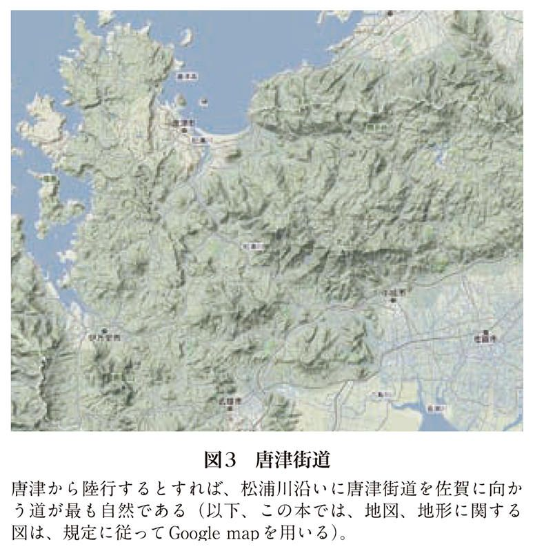
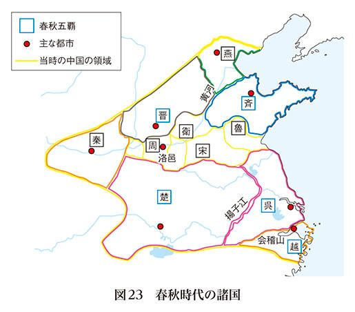
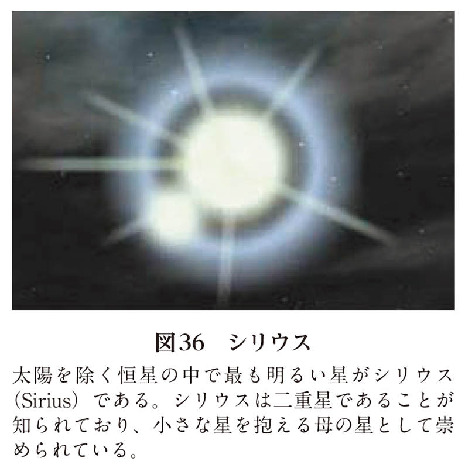

| 日本古代史を科学する (PHP新書) | |
| 中田 力 | |
| PHP研究所 (2012) | |

日本古代史を科学する
中田 力
この本を激動の世を民と共に生きた父に贈る
天照大御神と高木神は、平定を終えた葦原中国に正勝吾勝勝速日天忍穂耳命を天降らせることと決める。しかし、告げられた天忍穂耳命は、自身ではなく、萬幡豊秋津師比賣命との間に生まれた御子に任せると進言する。そして、邇邇芸命が高天原を旅立つこととなった。日本の歴史の始まり、天孫降臨である。
国産みの神話を持ち出すまでもなく、『古事記』と『日本書紀』に描かれた日本の神々は極めて人間的である。デフォルメされているとはいえ、描かれた物語のほとんどは、日常生活にありそうな現実的な話ばかりである。それに続く天皇家の誕生物語も、王朝の正史として十分理解できるものであり、「記紀」そのものに、それほど、作為的な印象を受けない。
知的能力の高さは、文化と時代を越えて、同じような現象を生む。どのようなものであれ、自分たちが責任を持って作り上げているものに、どうしても、納得のいく理論的整合性を求めてしまうのである。それが、ヒトという不完全な種が、いつ消滅しても可笑しくなかった歴史を辿りながらも、その叡智を蓄えながら生き残ることができた所以なのである。
日本という国家に、権威ある最古の正史である『古事記』と『日本書紀』、いわゆる、「記紀」と呼ばれる書を残した著者（編者）たちは、その時代を代表する至高の知識人であった。だとすれば、「記紀」に描かれた神話にも国造りの歴史にも、全くの作り話であったと切り捨てる部分は存在しないと考える方が素直である。むしろ、そこには、日本という国家を代表する頭脳集団が、時代背景を考慮しながらも意図的に盛り込んだ、多くのメッセージが残されている可能性が高いのである。真実を「隠し」として残したがるのは、いつの時代にも見られる、知識人の性でもある。
人間の叡智は、実存の科学的定義に辿り着くと、創造という「神の世界」を垣間見る瞬間を迎えた。奢れるものはやがて滅びることは必然であり、人類はその最終章に近づきつつあるのである。しかし、同時に人類が、まるで消え去る前の花火のように、いつの時代にも不可能と考えられた複雑系を読み解く科学原則の方法論を、その手中に収めたことも事実である。そんな、近代自然科学の叡智を背景として日本の古代史を扱えば、「記紀」の著者（編者）が残してくれた真意を読みとることが可能になるのではないだろうか。
それが、本書の主題である。
私たちが当たり前のように使っている科学という言葉の歴史は驚くほど浅い。
ニュートンの時代には物理学ですら科学ではなく自然哲学と呼ばれていた。もともと物事を論理立てて考えることを哲学と呼んだので、自然界における事象の記載を理論的に考える物理学のような学問を、自然哲学と呼んだのである。科学という単語が市民権を持ったのは、十八世紀以降になってからである。
現在では、物理学とか化学などの分野は、単に科学ではなく、自然科学と呼ばれる。それは人文科学という言葉が使われるようになった結果である。科学を二つの代表的な分野に分類した世界共通語であると思っている人もいるようであるが、人文科学という言葉は日本独特のものである。英語では scienceとhumanities であり、人文科学には科学と対応する単語すら入っていない。中国語でも、科学と人文学であり、科学は科学、人文学は人文学とされている。
現代学問体系では、哲学は人文科学に分類される。それだけ、哲学と言われるものの意味が変わったと言ってしまえばそれまでだが、もともと科学が属していた分野が人文科学と呼ばれ、哲学がその範疇に入っているのは、ある意味、不可思議である。「科学」という言葉と「学問」という言葉の境界線が、かなり曖昧になっているのである。日本でも人文科学ではなく人文学とすべきであると主張する学者も多いが、人文科学という方が一般的である。
何やら禅問答のようになってきたが、言葉が時代時代における社会学的要請により変化することの良い例である。人文科学という言葉が作られた背景に、人文学も科学の一部であると強調する必要があったことを物語っている。科学と人文学とは根本的に違った学問体系であり、もちろん、人文学が科学に劣るわけではない。それなのに人文学者が自分たちの学問を、あえて、人文科学と呼ばなければならなかったことは、本来ならば、屈辱だったと思われる。それでも、一般的な日本人を対象として、学問の二大体系とも言える人文学と科学とを同等列記するためには、科学という言葉を共有する必要があったのである。ここに、日本が抱えてきた文化の特殊性が見え隠れする。
平成二十二年八月二十五日、日本学術会議は五年ぶりの勧告を出した。そこで最初に取り上げられたものが、法における「科学技術」という用語を「科学・技術」に改めろとの指摘である。言い換えれば、科学と技術とは別物であることを正式に政府が認めろという要求である。今さらといえば今さらの指摘だし、間に「・」が入るか入らないかのことなのだが、非常に重要な意味を持っている。日本は明治維新以来、基礎学問に対する多大なる誤解を維持してきた国家だからである。学問に対する「後進国概念」である。
現在の自然科学は、純粋科学と応用科学に分離している。列強に対抗して日本が追いつけ追い越せと頑張った科学は応用科学であり、文字通り、科学技術の世界であった。今でも実践科学の重要性が薄れたわけではない。ただ、経済効果があるかどうかはっきりしない純粋科学の重要性を理解できることが先進国の条件であり、人類の叡智を誇れる唯一の手段であることを忘れてはならない。現実的に役に立つかどうかだけで場当たり的に評価を下すことは、学問の基本原則に反するのみならず、国家の未熟さと指導者の無能さを露呈する結果となる。口に出しては言わないまでも、経済効果のない学問は遊びにすぎないという心の底に残る偏見は、わが国の政府や官僚にはもちろんのこと、マスメディアから国民一般に至るまで蔓延している。学術会議の勧告はこの風潮への警告であった。
人文学が人文科学と呼ばれることとなった理由にも、同じような偏見が作用している。純粋科学ですら軽視される世の中で、人文学になどだれも振り向かないのではという懸念である。人文学が重要な学問であると知らしめる一つの手段として、科学という言葉を取り込んだのである。白川静氏の言を借りるまでもなく、哲学の成熟度では東洋が西洋よりも圧倒的に優れている。したがって、人文学こそが東洋人が最も誇れる学問体系であり、実際のところ、人類にとっても最も重要な学問なのだが、西洋色の濃い科学の軍門に下ったのである。日本人としては悲しいことではあるが、改めて騒ぎ立てるようなことでもないのかもしれない。
その反面、人文学が人文科学と呼ばれるようになったからといって、人文学が、積極的に自然科学的手法を取り入れたというわけではない。本来、人文学における命題の探求に自然科学的な手法はそぐわないものであったからである。それが少しずつ変化を見せたのは二十世紀に入ってからである。面白いことに、その前提には自然科学の変遷があった。決定論的学問として発達した自然科学が、計算による正確さよりも理論展開の正しさにその重点規準を移したのである。言わば、古典哲学への帰還である。数学が万能ではないことが証明され、物理学はその根本命題とされた正確さを捨ててゆらぎを認めることで、さらなる進化を遂げることになった。ここから、自然科学は人文科学との融合を開始した。複雑系科学の台頭である。
一般的に知られている物理学は、線形物理学である。
線形とは重ね合わせの原理が働くことと定義されるが、平たく言えば、１＋１が２になる世界である。その出発点となったのがコペルニクスの地動説であり、その進歩を支えたものが数学であることは言うまでもない。数理科学が自然科学の代名詞とされる所以である。目指したものは、あらゆる現象の決定論的記載であった。その頂点を極めたニュートン力学は、現在でも、最も人類の役に立つ物理学であると言われている。
化学が物理学との融合を果たした背景に必須であった原子の記載は、正確さを売りとしていた物理学がその誇りを捨て、曖昧さを許容したことから始まった。ハイゼンベルグの不確定性原理である。「神はサイコロを振らない」とアインシュタインに言わしめた量子理論の誕生は、物理学に曖昧さと確率論を持ち込んだ。統計力学の祖でもあるアインシュタインにさえも、実存そのものが決定論的なものではなく、確率論の上に成り立つという物理学は容認しがたかったのである。それでも、ゆらぎを認めた物理学はさらなる進歩を遂げ、クラウジウスが提唱し、ボルツマンによって確率（場合の数）として認識されていたエントロピーの概念は、シャノンによって情報という形而上的実存の記載法として数式化された。二十世紀の自然科学は着々と人文科学の分野に近づき始めたのである。
量子理論により確立された原子の概念は、化学の世界に電子軌道と共有結合の法則を導入し、やがて、ポーリングによる「混合軌道」（図１）の発見に結びつく。分子生物学を生み出し、遺伝情報の操作までも可能とした現代科学の申し子、生化学の誕生である。二十世紀の初頭、分子の存在ですら熱い議論の対象であったことを思えば、二十世紀の科学がいかに劇的な変化を見せたかが理解できる。人類の叡智は、まさに、指数関数的な進展を遂げたのである。
しかし、この時点で、線形物理学はその進歩を閉ざす。「サイエンス（Science）」と「ネイチャー（Nature）」の二大科学雑誌の編集者を務めたデヴィッド・リンドリー（David Lindley）が一九九三年に出版した『The End of Physics』（邦訳『物理学の果て』松浦俊輔訳、青土社）は、線形物理学の記載が限界に到達したことを世に知らしめた名著である。十九世紀にポアンカレが三体問題によりその限界を示した数学に続き、二十世紀には線形物理学が万能ではないことが明らかとなったのである。二十一世紀は複雑系の時代。その科学は、１＋１が２となるとは限らない非線形現象と、連続性が保証されない離散系とを扱うことが前提となっている。
それでも、自然科学者と称されている人たちのほとんどが、今でも線形科学者であることを考えると、一般に認識されている自然科学という概念そのものが古典となったことが、科学者の世界でも十分には理解されていないことが判る。コペルニクスの時代のように、人類の叡智が大きな変動を迎えた過渡期である現代という時代に、専門家を自負する自然科学者さえも理解していない認識を一般人に求めることは不可能である。湯川秀樹氏のノーベル賞受賞を機に、長年、日本の科学界に君臨してきた素粒子物理学も線形物理学であり、その意味では古典科学に属する。二十世紀の終わりにリンドリーが指摘したように、すでにその役割は終わっているのである。
複雑系科学は線形物理学の先に位置する。加えて、「万能の科学」と呼ばれるように、すべての学問に応用の利く科学である。それでもなお、扱っているものが決定論的な記載を許さないものであるからして、線形科学が絶対であると信じている人たちから根拠のない批判を受けることも多い。同時に、決定論的記載がないことを、「いい加減でも良い」と勝手に解釈し、空論を語る詐欺師まがいの人たちに利用されてしまう結果も招いた。それは、ピカソのキュービズムが抽象画とみなされて具象画の巨匠たちに批判された一方で、「あんな適当な絵ならばだれでも描ける」と素人に勘違いされたことと似ている。いつの世も、どの世界も、人間の愚行を見る限り大差はない。
もちろん、理論の正しさを検証しなければならないとする基本原則は自然科学の大前提であり、複雑系科学においても変わりはない。ただ、線形科学のように直接証明が可能でない場合が多い。それがさらに、複雑系科学を一般の人たちから遠ざけている所以でもある。
もともと、自然科学における実験のような直接証明にも、行われた実験を可能とする初期条件の設定が必須であった。しかし、線形科学の実験系においては、初期条件の微細な誤差は余り大きな問題とはならなかった。対照的に、複雑系では初期条件のほんの微かな違いが驚くほど違った結果をもたらす。「蝶々効果」（図２）と呼ばれる現象なのだが、そのお陰で、直接証明を行う実験系の正確な設定が極めて困難となった。
複雑系科学のもうひとつの特徴は、理論の検証を全体像の中で行わなければならないことにある。自然科学における理論とその検証は還元論的に進められてきた。つまり、対象とする現象を説明するために、対象とする現象をいくつかの要素に分解し、それぞれの要素に関する理論が証明できれば、その統合であるもともとの現象に関する理論も成立するとする原則に則っていたのである。この「重ね合わせの原理」が通用しないのが非線形行動を示す複雑系の特徴である。したがって、理論の検証は、常に全体像で行わなければならない。要素分解も要素分析もできないのである。
複雑系の検証を強引に還元論的に推し進めると、やがては現実とはかけ離れた「正解」が横行するようになる。それが、現代社会が抱える多くの問題の基本原因なのだが、複雑系科学の難しさは残念ながら民主主義とは馴染まず、多数を占める線形科学者をさらに古典的な考え方に固執させる結果を招いてしまった。人間の叡智は、避けることのできない変曲点を越えて下降し始めたのである。絶頂期を迎えている遺伝子医学と医療現場の致命的な乖離はその代表例である。前者は線形科学の代表であり、後者は複雑系の代表である。
その反面、複雑系科学は自然科学と人文科学の間に横たわっていた大きく深い溝を埋める結果ももたらした。「条件設定と全体像での評価」という複雑系科学における検証作業の方法論は、人文科学における命題設定の検証にも応用が利くのである。複雑系科学が、「万能の科学」と呼ばれる所以である。
科学者としての私は自然科学者である。
複雑系脳科学を専門としているが、研究の対象は人文学的命題であることが多い。これは、脳を扱う臨床医という本職から自然発生したものなのだが、心の自然科学的探究を追求しているうちに、ますます、その度合いを増すことになった。
自然科学者なのに人文科学的なものを対象にしていると、友だちが増える一方で、根拠のない批判も受けるようになる。どうも、人間の持つテリトリー意識は、自己防御の本能として、よほどの聖人でない限り抑制することができないらしい。しかし、感情に押し流された根拠のない中傷は、かえって、自然科学者である私が人文科学という敷居の高い分野でものを語ることへの抵抗を減らしてくれる結果となった。複雑系脳科学者の考古学である。
複雑系科学において最初に考えなければならないことは「初期条件の設定」である。これは、数学における「公理（axiom）」、量子力学における「前提（postulate）」、法律における「憲法（constitution）」のようなものである。初期条件が変われば結果も変わる。したがって、初期条件の明確な提示とその解析は、すべての理論展開に優先する。
古典的な自然科学においても条件設定の作業は重要な要素であったが、線形科学においては無視できるほどのわずかな初期条件の違いが結果を大きく左右する（蝶々効果）複雑系科学においては、条件設定そのものが絶対的な意味を持つ。複雑系科学における理論展開が正しいかどうかは、初期条件の設定が正しいかどうかにかかっていると言っても過言ではない。初期条件の設定が正しい確率が高ければ高いほど次の理論展開が正しい確率が高まり、初期条件が曖昧な理論は、どのようにそれらしいものであろうが意味を持たないのである。
また、複雑系科学ではマルコフ連鎖が重要な役割を果たすと考える。マルコフ連鎖とは、完結する単純なプロセスが何度も繰り返されていく過程であり、ある状態（）から次の状態（）に移行する簡単なルール（Rule M）だけが決まっている。一回のプロセスでどのような結果になるかはどこから出発したかだけで決まり、出発する状態にどのように到達したかは問わない。一般に、過去を問わないという表現で教えられる理論である。
過去を問わないということは、過去を問えないという意味でもある。マルコフ連鎖におけるある時点の状態に到達するルートは複数あり、非線形要素が強いプロセスの場合には、たとえ、ひとつ前の状態でさえも正確に後戻りができない。１＋１が２にならない世界で、プロセスを逆に辿ることは不可能なのである。考古学に当てはめて言えば、時間軸に沿った考察だけが許されるという意味である。歴史の理論的検証において、時間軸の逆行は許されないのである。
これらの原則を当てはめながら日本の歴史、特に考古学的な歴史を自然科学者として考察してみることにする。まずは初期条件の設定であるが、それは、どう考えてみても、「魏志倭人伝」にあるように思える。
自然科学の検索は仮説の設定から始まる。考古学におけるそれは、検証の出発点となる記載の決定である。伝承でも良いとする学者もあるが、やはり、信頼できる原点とするには正当性のある文字による記載が必要であろう。
日本に文字（漢字）を伝えたのは王仁（和邇吉師）であると言われる。『論語』と『千字文』を天皇に献上したとされるが、これが日本の文字文化の出発点である。王仁は楽浪郡の漢人系の学者であるとする説が有力で、日本には三世紀後半、遅くとも四世紀には渡って来たと信じられている。『千字文』そのものは六世紀初頭にできた書物であり、年代的な問題から王仁が実存したことを疑問視する研究家もいるが、日本に漢字が正式に伝来した時期が、三世紀から六世紀の間であるという記載としては、かなり信頼のおけるものなのだろう。
日本最古の歴史書と考えられている『古事記』も『日本書紀』も八世紀になって成立したものである。参考にされたと言われる『上宮記』『帝紀』『旧辞』『国記』『天皇記』なども、すべて、六世紀から七世紀にかけて書かれたものとされる。ここから、前述したように、日本においても、六世紀までにはきちんとした漢字文化の形成、そして、それに伴う正史作成への意欲が生れていたことははっきりする。しかし、紀元前後に遡る日本の古代史を振り返るための記載として採用するには、『古事記』も『日本書紀』も、いささか心もとない。正史であるから、その記載は改めて検証すべき対象ではあるが、初期条件とするには曖昧な点が多すぎるのである。
中国最古の史書、司馬遷の『史記』の成立は紀元前九一年とされる。しかし、武帝の怒りを買うことを恐れた司馬遷はそれを隠し、娘に託された『史記』は、宣帝の代になって初めて、孫の楊が世に広めたという逸話を残す。ここから、『史記』が、『古事記』や『日本書紀』とは決定的な違いを持つことが判る。『史記』は、皇帝の命により編纂されたものではなく、したがって、時の為政者の意図が反映されていないのである。結果として、その記載の客観性が極めて高いと推測される。事実、すでに、『史記』に記載された多くの故事が史実であることが確かめられている。始皇帝の兵馬俑はもちろんのこと、伝説とされた、夏、商（殷）、周の古代王朝に至っても、記載通りに存在したことが証明されているのである。
司馬遷の『史記』は、それが書かれた時代から二千年も遡る王朝の描写に、高い信頼性が持てる。それは、歴史をきちんと書き遺すという司馬遷の基本姿勢と、時を惜しまぬ徹底した文献検索がなした業であることは明白である。学術論文のように引用した文献をそれぞれの箇所に付記することはなかったにせよ、最も信頼性のおける自然科学の学術雑誌でさえも足元にも及ばない、崇高な科学論文だったのである。清い意思をもってまとめられた人文科学系の書は、著者が純粋な意図を持っていれば、ある種の自然科学の論文よりもその記載に信頼が置けるのである。適切な条件設定に基づいた仮説の提示を欠き、現象論のみを追求した論文合戦に明け暮れる現在の自然科学者が学ぶべき点である。
さすがの司馬遷にとっても夏王朝以前の歴史は資料不足だったようである。それでも「五帝本紀」の記載には、他の三皇五帝の逸話よりも、歴史的意義を窺い知ることができる。漢の時代に実存した伝承と記載からできうる限り史実だけを取り出したいという司馬遷の意図が明らかに読み取れるのである。
中国史における『史記』の存在には動かしがたいものがある。現在でもその輝きを失わない物理学の名著、ニュートンの『プリンキピア』に優るとも劣らない、本当の意味での科学書と言える。中国古典文化を祖とする東洋文化圏のすべての人々と、その人々が作り出した国家という集団組織を考えるとき、紛れもなく不動の初期条件なのである。
残念ながら、『史記』には日本の記載がない。日本の記載が中国史書に現れるのは、陳寿の『三国志』である。だれもが知っている、「魏志倭人伝」が収録されている正史である。二十五正史の中で、書かれたのが『史記』、『漢書』に続いて三番目に古い。陳寿は蜀出身の晋王朝の史官であった。
石原道博氏によれば、陳寿がまとめた『魏志』巻三十・東夷伝・倭人の条（「魏志倭人伝」）は魚豢の『魏略』の記載をそのまま伝えたものと解釈できるという。したがって、陳寿の個人的な史観が導入されていないことは確かであろう。魚豢の人となり、政治的な背景は知ることができないが、魏王朝以外の歴史を記載した『典略』と併せ、実体験者による証言に重きが置かれて書かれた書であると認められている。
『魏略』が成立したのは魏の終わりか晋の初め頃とされるので、三世紀のことである。この頃の日本は、やっと国家らしきものが形成された時期であり、そのような体制にある集団が中国王朝にとってどれだけの価値があったかは疑問である。朝貢してきた者の語ることに多少は興味を持ったとしても、その国に関する記載に何らかの政治的な意図をもって虚偽を加える必要があったとはとうてい考えられない。したがって、『魏略』に記載された事項がそのまま『魏志』に編纂されたとすれば、現在、「魏志倭人伝」として伝えられている記載の信憑性はかなり高いことになる。ここから、日本の歴史を語る限り、「魏志倭人伝」をもってその絶対的な原点となすべきことが理解される。
自然科学者として日本古代史への挑戦を試みるのが本書の主題である。その実践として、まず、「魏志倭人伝」の解釈から始めることにしたい。
最初に、自然科学における検証過程の原則に従い、はっきりとした条件設定を行いたい。量子力学の場合と同様に、「公理（axiom）」の設定は不可能なので、理論展開を行う上で規準となる「前提（postulate）」を定める。
前提１ 「魏志倭人伝」に書かれている記載には故意に変更された事項がない。
記載に何らかの操作がなされたとの立場は採らない。その時点で、筆者（編者）が最も正確な記載を心がけたとして、その記載のままに検証する。したがって、記載そのものの変異を認めた上で行われた過去の解釈は、どのような権威者が認めたものであろうとも、最初から議論の対象とはしない。
前提２ 科学・技術の時代背景をきちんと考察する。
現象論に関する科学知識は、古代人のものを侮ってはいけない。特に、天文学に関することは、驚くほど正確な知識を持っていたと考えられる。その反面、たとえ理論的に理解されていたとしても、技術力の違いから正確な結果を導き出せない場合が多々ある。したがって、高い技術力を要する問題に、不必要に正確な解を求めない。
前提３ 社会学的な意識を持ち込まず、常識的でない解釈は採用しない。
どの時代においても社会学的束縛を持ち込まないことが自然科学の基本である。人文科学の検証においても、この原則を外さないことが大切である。歴史解釈でいえば、権威主義に囚われず、科学的常識からも、その時代の社会学的常識からも逸脱しないことを意味する。
これら三つの前提を原点とし、議論を開始することにする。
最初の設問は、「邪馬台国がどこにあったか」である。
これまで数え切れない著書が書かれている議論であるから、改めて詳細な紹介は省略し、まず、「魏志倭人伝」に書かれている邪馬台国への通過地点を記載してみると、次のようになる。
帯方郡
狗邪韓国
對海国
一大国
末盧国
伊都国
奴国
不弥国
投馬国
邪馬台国
記載された地名はこの順番に移動した魏の官僚の証言によると考えられる。道筋を順番に記載したものではないという反論も存在するが、常識的に考えると、そのような解釈はこじつけの感を拭えない。どう考えてみても、ある地点からどのように目的地に辿り着いたかの記載をする場合、それも、初めての旅ならばなおさら、自分が見聞きした通りに順を追って記述すると考える方が妥当である。したがって、ここでは前提３に基づいて無理な解釈を捨て、これらの土地を順番に通過しながら邪馬台国に行き着いたとする。それ以外のことは考慮しない。
帯方郡は、成立の歴史や公孫氏との抗争はともかくとして、卑弥呼が朝貢使を送った当時は魏の直轄地であったとされる場所である。現在のソウル近辺であったとする学者が多いが、まだ、その比定地は確定していない。
狗邪韓国は金官伽耶の前身と考えられており、現在の韓国慶尚南道金海市周辺と考えてほぼ間違いないようである。對海国と一大国はそれぞれ対馬と壱岐であることも、ほとんど確定している。九州上陸の場所となる末盧国も多少の異論はあるようだが、唐津近辺であったとすることが常識である。どうもここまでは議論の余地はないようで、その道程を石原道博氏の読み下し文を借りて記載すれば以下のようになる（以下、本書における「魏志倭人伝」の読み下し文は、すべて石原氏の記載を借りる（１））。
帯方郡から狗邪韓国
郡より倭に至るには、海岸に循って水行し、韓国を歴て、乍は南し乍は東し、その北岸狗邪韓国に到る七千余里。
狗邪韓国から對海国
始めて一海を度る千余里、対馬国に至る。
對海国から一大国
また南一海を渡る千余里、名づけて瀚海という。一大国に至る。
一大国から末盧国
また一海を渡る千余里、末盧国に至る。
まとめれば、
帯方郡から狗邪韓国 水行 七千余里
狗邪韓国から對海国 一海渡 千余里
對海国から一大国 一海渡 千余里
一大国から末盧国 一海渡 千余里
である。
帯方郡の位置ははっきりしないので、帯方郡から狗邪韓国までの距離の概算はできないが、「水行」が海岸線に沿った船での道程であることは明らかである。対馬の港を厳原港付近、壱岐の港は一大国の都と比定されている原の辻遺跡に近い内海付近にあったとし、狗邪韓国の港を釜山港と考えてその直線距離を測ると、それぞれ、一〇四キロメートル、六四キロメートル程度となる。この道程をともに千余里と記載しているのだから、かなりの誤差である。壱岐の内海から唐津に至っては四一キロメートルしかない。この時代すでに正確な測量技術を持ち合わせていたと考えられる中国でも、大きく揺れる船の上での距離計測の技術までは持ち合わせていなかったことが理解される。技術力の低さが逆説的に、時代背景を良く表わしている。
現在の中国で採用されている「里」の単位は一里が五〇〇メートルである。この変換法則を採用すると、それぞれの航海は一回につき五〇〇キロメートル以上なされたことになる。釜山港から厳原港までの直線距離の五倍近い距離である。海洋航海における正確な測量技術を持たなかったための誤差としても大きすぎるし、また、故意に距離を水増ししたという説は採用できない。となると、「魏志倭人伝」に記載されている「里」の単位が現在のものとは違うことが分かる。それではどのような単位だったのか。これには、十分納得のいく説明が提唱されている。
「魏志倭人伝」に現れる距離の単位が周王朝で使われていた里の概念であることを最初に主張したのは、古田武彦氏であった。氏は、多くの文献の詳細な考察から、この里は一里が七五―九〇メートルに相当するものであるとし、「魏晋（西晋）朝短里」と名づけた。もちろん、物議を醸したことは言うまでもない。その議論に自然科学的結論を与えたのが谷本茂氏であった（２）。自然科学者の立場から言えば、谷本氏の設問設定と結論づけには全く問題がなく、氏の論文をもって、周に「短里」が存在したことの証明となるはずであるが、人文科学の学会では、まだ、正式には認められていないらしい。
詳細は割愛するが、谷本氏は、戦国時代の終わりに成立されたと言われる、『周髀算経』という数理天文学書の記載に従い、一里は七六―七七メートルになると算出した。氏自身も論文で明言しているように自然科学では当たり前のことだが、誤差が出ることは織り込みずみである。当時の計測技術は現代のそれと比べてかなり幼稚なものであっただろうから、計測誤差の累積による推測値の変化は三〇％程度と見積もって、75±25メートル程度の値がもっともらしい。周時代の技術を相当馬鹿にして一〇〇％の誤差が出たと仮定しても、最大で一五〇メートルとなり、とうてい五〇〇メートルまでは届かない。「短里」が使われていたという結論は揺るがないのである。
谷本氏の計算値と古田氏の計算値がかなり似通ったものであったことから、谷本氏の最大の貢献は数値計算にあるように勘違いされることも多いが、実はそれ自体は重要なことではない。「短里」の存在の保証にはなっても、短里がどのくらいの長さであったかの正確な計算は、谷本氏の考察からは不可能だからである。谷本氏の最大の貢献は、氏が『周髀算経』という、周王朝時代の数理天文学書を用いたことにある。周王朝時代に「短里」の概念があったことを、一〇〇％に近い確率で証明しているのである。
もし、「短里」が「魏志倭人伝」で初出であり、その概念が魏王朝で初めて構築されたものであるとの主張であったとすれば、その証明は不可能である。しかし、古代王朝時代に考察された数理天文学において使われていたとの証拠があれば、たとえ正確な数字は判らなくとも、話は全く別である。紀元前に成立した王朝名である「漢」が「天の川」を意味することからも理解されるように、古代中国における天文学的知識には侮れないものがある。その中で、数理計算の単位とされる物理量の設定は、天文学上の記載で行われていた可能性は極めて高いのである。いみじくも、谷本氏はその記載を見つけ、適切な計算から「短里」の存在を証明してみせたのである。魏王朝が、始皇帝の命で変革され漢王朝に受け継がれていた「長里」の概念を古典の「短里」に戻すという作業を行ったとしても、十分納得がゆく。古田氏の「魏晋（西晋）朝短里」は、緻密な文献検索が見つけだした真実なのだろう。
ただ、数値の決定という観点から言えば、実は、その検討は「魏志倭人伝」そのものから行うべきものである。前述した通り、その時代すでに、観察を中心とした中国の数理天文学は、かなり高度な学問体系を築いていたと考えられるからである。また、陸地における距離の実測は常識とされていた。言い換えれば、方角に関する記載と陸地における測量の記載には、かなりの信頼性が置けるのである。
当時の中国では土地の広さの記載を同じ大きさの正方形に換算し、その一辺の長さを用いることで表すという技法が使われていた。「魏志倭人伝」では、対馬と壱岐の大きさをその方法で記載している。それぞれ、
方四百余里ばかり
方三百里ばかり
である。
かなり正方形に近い壱岐がすっぽり入る正方形の一辺は一六―一八キロメートル程度であるから、方三百里の記載から計算すると一里は、五三―六〇メートル程度ということになる。長方形の対馬を正方形に直して考えると、二七―二九キロメートル程度になるから、ここから計算した一里は四百余里の「余」を一五％と見積もって四百六十里と考え、五八―六三メートルとなる。古田氏が現在採用している七五メートルという規準値よりは、もう少し短いようである。
本書では、「魏志倭人伝」の一里を六〇メートルとして議論を進めることとする。
「津」が港を意味することはだれでも知っている。末盧国と比定されている唐津は、現在でも海に接しながら津の名を持つ土地のひとつである。それだけ、堆積による土地の拡大がなかったという意味である。唐津近辺の地形は「魏志倭人伝」の時代とさほど変わらない風景を保っていることになる。
古代史を語るとき、堆積や浸食による地形の変化は、常に考慮しなければならない問題である。特に文化的な都市は大きな川の河口地帯に広がることが多い。人工的な埋め立て技術が進歩してからは、その変化は著しいものとなった。東京も、江戸時代と現代とでは雲泥の差がある。「汽笛一声新橋を」離れた最初の東海道線の列車は、海岸沿いを走っていたのである。今では、品川駅から埠頭まで直線距離で一・八キロメートルもある。
唐津に着いた一行はいよいよ邪馬台国を目指して倭を旅することになる。最初の行程には、割としっかりした方向と距離とが記載されている。
末盧国から伊都国
東南陸行五百里にして、伊都国に到る。
伊都国から奴国
東南奴国に至る百里。
奴国から不弥国
東行不弥国に至る百里。
現在、伊都国は前原市付近、奴国を博多付近に比定することが、まるで決まったことのように扱われている。これは、博多の志賀島から出土した金印、「漢委奴國王」の記載が大きく影響している。つまり、博多近辺に奴国と呼ばれる国があったことはほぼ間違いないので、「魏志倭人伝」に書かれている奴国も博多であるとの強い思い込みがあるためである。そこから、伊都国を福岡県糸島市、もしくは怡土と呼ばれた福岡市西区付近に比定するのである。
このような結論の出し方が論理的でないことはだれでも理解できるはずである。しかし、長年の間、この理論は、適切なチャレンジを受けていない。権威者に支えられた既存の結論への挑戦は、それだけ難しいということなのだろう。科学に権威を持ち込むことの愚かさである。
「魏志倭人伝」そのものに「漢委奴國王」と書かれた金印が志賀島にあると書かれていたわけではない。したがって、論理的思考を行う者にとっては、かつて博多付近に奴国と呼ばれる集団が存在したという後の世の知識は、積極的に外して考えなければならないものなのである。それでもなお、正確な理論展開の結果として奴国が博多にあったとの結論が出た場合こそ、初めて、博多の奴国と「魏志倭人伝」の奴国とが同じ国家であるとの証明になる。
しかし、博多の奴国が「魏志倭人伝」の奴国であるとの結論が先にあってからの理論展開は、全く意味を持たない。もし、自然科学でそのような議論が許されていたならば、太陽は今でも地球の周りを回っていることになる。プトレマイオス天文学は、決して愚者の学問だったわけではなく、最先端知識と技術を誇る優秀な科学者集団による最先端科学だったのである。それでも、明らかに動いて見える太陽と静止している自分たちとの関係を逆転させる発想には至らなかった。今さらながら、コペルニクスの偉大さには頭が下がる。
「魏志倭人伝」の奴国と博多の奴国が同じであったという保証は全くない。実際のところ、皇帝側でさえも国家名が「漢」から「魏」と変化しているのである。その間、同じ奴国が同じ場所にあったとは、むしろ考えにくいのである。博多の奴国が当時も存在したとすれば、それは、すでに漢の皇帝から金印を授かった宗主国である。新興国家として朝貢し、自分たちも金印を授かろうとしている邪馬台国が敵であったとしても、その配下に成り下がっていたとは思えない。
「魏志倭人伝」にある「倭国乱れ、相攻伐すること暦年」、すなわち「年を歴ているあいだ」に奴国が宗主国の座を追われたとすることは理解できる。それでも、当時の金印は三種の神器のような存在である。「魏志倭人伝」の奴国は「二万戸」の集落で、邪馬台国の「七万余戸」の三分の一以下である。金印を隠し、または持ったまま女王国に従い、もともとの集落の規模をどっと落としてまで生き残ったとは考えにくいのである。むしろ、博多の奴国と「魏志倭人伝」の奴国が違う国家とした方がすっきりする。
加えて、「陸行」した理由がはっきりしない。
魏王朝の一行は先進大国から東夷の果てにある地に向かっているのである。おそらくはある程度大きなグループであっただろう。魏王朝の威厳も示さなければならず、身の安全も確保しなければならない。だとすれば、自分たちの船で行けるところは、おそらく自分たちの船で移動したと考えた方が素直である。前原市も福岡市も海岸沿いにある。この程度ならば「水行」したに違いない。それを「陸行」したのである。船は唐津に残し、伊都国まで「陸行」したからには、伊都国が簡単に「水行」できない場所にあり、「陸行」が有利であったと考えなければ合わないのである。
さらに、方角が違う。
周時代の初期、つまりは、紀元前十一世紀には数理天文学が確立していた中国で、三世紀の魏王朝の時代に星が読めない一行が邪馬台国に向かったとは考えられない。だとすれば、限りなく北東に近い東を東南と記載するはずがないのである。
「魏志倭人伝」の奴国は博多の奴国とは違うことは明らかである。したがって、伊都国も前原市周辺にはなかったことになる。既存の考え方に挑戦するのが科学であるが、あくまでも論理的であるべき学者と呼ばれる人の中で、これだけ非論理的な結論が長年定説とされてきたことには驚かされる。
では、伊都国はどこにあったのだろうか。
「魏志倭人伝」は、伊都国に向かう道を東南と明記し、同時に、道のりが五百里であるとも明記している。ここまで、余という表現を加えていないのは、壱岐の大きさの記載の場合と、伊都国への道のりである。これは、実測値であり、せいぜい一〇％程度の誤差しかないという自信を表わしているのだろう。明らかに、伊都国は唐津から東南の方向、「30（０・０６×５００）±３（10％）」キロメートルの地点に存在したのである。そこを探せばよい。
多くの静止衛星が飛ぶ現代、私たちは地球上のどの土地でも直接眺めることができるようになった。その画像を自分で処理し、地形だけを眺めることも可能であり、正確な標高情報から三次元描写することも可能である。実際にその土地を歩いているかのような疑似体験をコンピュータ上ですることもできる。その技法は多くの科学者が様々な目的のために活用しており、考古学的検索においても然りである。高句麗の滅亡後日本に渡った王族若光の一行が、なぜ、駿河から埼玉県高麗の地に辿り着いたかを説いている中野不二男氏が「宇宙考古学」と命名しているが、まさに、宇宙学の進歩の賜物である。
衛星画像を利用しながら、「魏志倭人伝」に記された伊都国への道筋に最も適合した経路を検索してみると、すぐに、唐津街道と呼ばれる唐津から多久に抜ける山道であることが判る（図３）。同時に、いかに、唐津から博多に向かって陸行することが理にかなっていないかも明白となる。唐津街道が真の邪馬台国への道だったに違いない。

唐津街道にはＪＲ九州の唐津線が並走しているが、その路線通りに唐津駅から三〇キロメートル先の地点まで辿ると、東多久駅を少し過ぎたところに到達する。そのあたりを地形図上で検索してみると、ちょうど、山道から平野に抜ける寸前の、ちょっと開けた土地であることが判る。つまり、自然の関所のような場所なのである。ここに小さな集落を作れば、通過するものすべての管理が可能となる。
「魏志倭人伝」の記載は、伊都国を、まさにそのような機能を持った特別の場所であると記載している。
千余戸あり。世々王あるも、皆女王国に統属す。郡使の往来常に駐まる所なり。
また、女王国の統治制度を語った記載には、
女王国より以北には、特に一大率を置き、諸国を検察せしむ。諸国これを畏憚す。常に伊都国に治す。国中において刺史の如きあり。王、使を遣わして京都・帯方郡・諸韓国に詣り、および郡の倭国に使するや、皆津に臨みて捜露し、文書・賜遺の物を伝送して女王に詣らしめ、差錯するを得ず。
最後の部分は、
伝送の文書・賜遺の物を捜露す。
とも読めると石原道博氏の注にあるが、その方が判りやすい。どちらにせよ、大率とは刺史のような官吏であったと記されているので、不正を摘発する監察官のようなものであったと推察される。交易品、書簡などの監察を行い、女王にとって良からぬ話が京都（魏の都、洛陽）、帯方郡、韓国の国々に渡ることも防いでいたようである。その常駐先が伊都国であったことは、伊都国が女王の治める倭という連合国家に出入りする関所のような場所であったことを強く示唆している。つまりは、出入国管理や税関のような仕事をしていた官吏が住む場所だったのである。特に、邪馬台国より北にある国を管理するためには、その監察官を北の玄関口に配置する必要があったのである。
地形を見ると、唐津は三方を囲まれた、女王国連合国家の港とするには最適な場所であり、そこから抜ける唯一の陸路とも言える細い街道が唐津街道である。そして、その最後の場所に位置する伊都国が出入国管理をしていた。いざとなれば、街道を閉じてしまえば守りにもなり、良からぬ考えを持った連合国の長が密書を帯方郡などに送ろうとしても、防ぐことができる。「郡使の往来常に駐まる所」でもあり、帯方郡からの使者はここで何らかの手続きをする必要があったのかもしれない。「皆津に臨みて捜露し」の津とは、末盧国、つまりは唐津そのものを意味していたと考えれば、すべてに納得がいく。
東多久から小城に向かって山道を抜けると、目の前に広がるのは広大な佐賀平野である。そこに、奴国と不弥国があった。
佐賀平野は、有明海に注ぐ筑後川とその同水系の嘉瀬川、六角川、塩田川などが運んだ堆積物で作られた平野である。縄文時代の海岸線は現在の長崎自動車道あたりで、江戸時代にはそれが、現在の長崎本線あたりまで進んでいたと言われている。「魏志倭人伝」の時代は、その中間あたり、現在の三十四号線あたりであったと考えられる（図４）。
唐津街道が平野に抜けたあたりから東南に六キロメートル（百里）の地点は、唐津街道が三十四号線にぶつかる三日月町五条の交差点あたりである。唐津線はさらに南下して長崎本線と久保田で結ばれる。このあたりに二万余戸の集落があり、そこが奴国と呼ばれる地であったのだろう。さらに三十四号線に沿って東に六キロメートル（百里）進むと、佐賀駅の北側に出るが、二百六十四号線堀江通と交差するあたりである。そこに不弥国があったことになる。この近辺は今でも標高三メートル以下の土地が広がっており、邪馬台国の時代には間違いなく海であった（図５の２）。
伊都国、奴国、不弥国のそれぞれが六キロメートルほどしか離れていないことを考えると、おそらくは、ある種の生活共同体であったと考えられる。その中で、二万余戸の奴国が中心的集落であったことは間違いないだろう。佐賀平野は今でも米作りで有名な土地である。おそらくは、水田を中心とした比較的豊かな集落だったと考えられる。その一方、不弥国には千余家しかない。帯方郡からの一行が不弥国に移動する必要があった理由は有明海だろう。不弥国は船着き場として重要であったに違いない。漁師の集落だったのかもしれない。
古来、人々が集落を作るために選ぶ場所はいろいろな意味で「有利な土地」である。したがって、何らかの理由で見捨てる必要が生まれない限り、その集落は次第に成長する。結果として、古代の遺跡をその中心部に探し求めるのは難しいのである。奴国も不弥国も次第に発展統合し、今では、佐賀市という大きな都市となっている。その一角に、吉野ヶ里のような集落が壊されずに残ったことは、納得のいく話である。
邪馬台国への道は、不弥国からまた「水行」となる。大海を行くのではなく、帯方郡から狗邪韓国へ旅した時のように、海岸線を船で移動するのである。今回は、黄海（西海）ではなく、有明海である。まず向かうのは五万余戸の大国、投馬国である。
ところが、「魏志倭人伝」における行程の記載は、不弥国以降は、極端に雑になる。
南、投馬国に至る水行二十日。
南、邪馬壱国に至る、女王の都する所、水行十日陸行一月。
だけである。それまで里で記載していた距離が日数になっている。これには、「隋書倭国伝」（『隋書』巻八十一・東夷伝・倭国）の初頭に記載がある。
夷人里数を知らず、ただ計るに日を以ってす。
である。つまり、距離を日数で記載するのは夷人であり、帯方郡から赴いた上級官吏が記載する方法ではないのである。
なぜこのようなことが起こったのだろう。
おそらくは、上級官吏が不弥国で倭国の粗末な船に乗るのを躊躇したのだと思われる。したがって、以降の道程は、星を読み、距離を測る能力を持った人間は旅をしていないと考えられる。ただ、邪馬台国の記載はある程度できているので、下級官吏、もしくは下僕のような随行者は派遣したようであるが、その下級官吏でさえも、邪馬台国以北には行きたがっていない。
女王国より以北、その戸数・道里は得て略載すべきも、その余の旁国は遠絶にして得て詳かにすべからず。
と書かれている。この「言い訳」は、実際に下級官吏（下僕）が邪馬台国までは行って来たという証にもなっている。
上級官吏が邪馬台国までは行っていないことの証はもうひとつある。卑弥呼、もしくは、卑弥呼の名代との謁見が行われていないのである。『隋書』倭国伝には煬帝に派遣された裴清と倭王との会話が記載されているのであるから、上級官吏がきちんと邪馬台国に足を運んでいれば、おそらくは、何らかの会見がなされた記載があって然るべきであろう。
さて本題に戻って、邪馬台国への道を辿ることにする。
情報は、
不弥国から投馬国 水行二十日
投馬国から邪馬台国 水行十日陸行一月
だけである。これだけで行程を決めるのは無理なような印象を受けるが、実は、ここまで来ていれば割と容易に場所の特定が可能である。
頼りになるのは、投馬国が奴国の二万余戸の二倍以上、邪馬台国の七万余戸にも迫ろうという五万余戸の大集落であることである。有明海を南下し、二十日で到達でき、かつ、当時すでにそれだけ多くの人間を養えることのできる肥沃な平野が存在した場所を探せばよいのである。
ここでも宇宙考古学が大変役に立つ。今回は、全体像を見るために、海抜五メートルまでの土地は当時海であったと考えて検討を加える（図６）。結果から言えば、もっとも近い場所が現在の熊本付近である。同時に、熊本付近以外の比定は無理であることも判る。なぜならば、熊本以南の九州西海岸で、「水行」で到達できる適当な平野は存在しないのである。
投馬国は熊本近辺にあったのである。
佐賀から熊本まで直線距離で六二キロメートルだから、単純に、「水行」一日は直線距離として、約三・一キロメートルとなる。実際は、海岸線に沿っての移動で、かつ、毎日一定距離を移動したとは考えられないので、一日に船で移動した距離はもっと長くなるだろうが、ここではそれを問題にしない。ただ、次の概算に使うのである。
投馬国からの行程は、まず「水行十日」である。これは投馬国までの「水行二十日」の半分であるから、この部分は、直線距離で三一キロメートル程度であったことが判る。そこで陸に上がったのである。熊本からこの距離にある上陸可能な土地を探すと、球磨川の河口付近、現在の八代市付近であることが判る。地形解析によると宇土半島はまだ九州本土と地続きではなかったようであるから、船がそれほど大きくなければ、八代付近までは簡単に「水行」可能である。そこから、「陸行一月」が始まったと考えて、ほぼ間違いない。
八代から内陸に入ったあたりは山岳地帯である。したがって、「陸行」した道は、球磨川沿いの人吉街道であったことがほぼ確定的である。唐津街道の場合と同じように、ここには肥薩線が並走している。やがて比較的平らな土地に到達する。人吉盆地である。おそらく、ここまでは間違いない。
現在の肥薩線は八代と隼人を結ぶ路線であるが、もともと八代－人吉までが官設鉄道の人吉線で、吉松－隼人間は鹿児島線の延長として作られた官営鉄道線であった。人吉－吉松間は今でもダイヤが違い、一日五往復しか走っていない。そのうち、二往復は観光列車である。
ちょっと横道に逸れた感があるが、実は、明治維新後国家が整備した官設鉄道の走行は、当時の地形を知るのに極めて役立つのである。当時の技術は現在の新幹線作りとは違い、地形に敏感だったからである。
八代から人吉までは典型的な川線であり、球磨川に沿った渓谷を縫って走る、現在ではその景観を楽しむことのできる路線となっている。邪馬台国時代の日本でも街道筋であった可能性は非常に高い。
人吉盆地は人吉から水上まで東西に延びる大きな盆地である。良質な水に恵まれた土地で、米作りに適しており、米焼酎の代表的生産地でもある。旧人吉線に接続するように盆地を走る鉄道が、くま川鉄道湯前線である。この路線も旧国鉄特定地方交通線であった。そして、くま川鉄道の歴史には、非常に興味深い記載がある。
一八九二年六月二十一日に公布された、国が建設すべき鉄道路線を定めた法律「鉄道敷設法」によれば、湯前駅から妻線の杉安駅までの延伸が計画されていたのである。妻線は一九八四年に全線廃止されるまで宮崎市の佐土原駅と西都市の杉安駅とを結んでいた旧国鉄の地方交通線である。国は、この妻線の終点杉安駅と、くま川鉄道湯前線の終点湯前駅とを結ぶ計画だったのである。結ぶ計画だったということは、それが当時の技術で可能であったことを意味する。言い換えれば、山越えが比較的容易であったことの証明となるのである。
人吉盆地は、南九州山岳地帯の中継地点のような場所である。ここから四方に向かって旧街道が延びている。「陸行」の一行は人吉盆地に到達した後、どの道を進んだかを考えてみる。
北に向かう道はやがてまた熊本に戻る。南は伊佐、えびの市へと通じる。そして、東への道は湯前線の延長計画に沿って移動すれば西都、言わずと知れた、西都原古墳群のある宮崎の地である。
「魏志倭人伝」にはどの方向を辿ったかを科学的に検証するための直接的な情報は残されていない。必然的に、ここからは間接情報に従わなければならず、確率論的精度が落ちる。したがって、行程の検索は残念ながら可能性を示すのみで結論は控えなければならない。
しかし、到達地、つまり、邪馬台国があったであろう場所は高い確率をもって決定できる。なぜならば、「魏志倭人伝」の記載から、邪馬台国が海岸線に近い場所にあったことが明らかだからである。
北の道から到達する海岸は熊本近辺であるから違うだろう。伊佐から到達できる海岸は水俣方面であり、水行の延長で行けるところだからこれも違う。えびの市は、さらに小林を介して都築へと向かう道となる。ここから、人吉盆地から一行が向かった道として考えられるのは、西都市に向かう東の道か、えび市から都築へ抜け、そこからさらに海岸に向かう道のどちらかということになる。
結局のところ、どちらの道を通ったとしても、到達地は宮崎平野、日向灘の地である。邪馬台国は日向灘に面したこの地にあったのである（図７）。
邪馬台国が宮崎平野、日向灘の地にあったことはまず間違いない。
「魏志倭人伝」を原点とし、その記載だけを論理的に検討した結果、迷うことなくこの地に到達したことは、自然科学的に言えば、この比定が統計学的に「有意（statistically significant）」であること意味する。「確率的に偶然とは考えにくく、意味があると考えられること」なのである。
数学で言えば、公理が「魏志倭人伝」で、邪馬台国の場所はそこから証明された「定理（theorem）」のようなものである。もちろん、数学のように決定論的に正確な意味での定理ではないが、直接証明が不可能な考古学における必然的なゆらぎを許容した範疇では、定理と同等に扱えるという意味である。そして、その定理を用いれば、次の定理を証明できる。
しかし、その前に、「魏志倭人伝」における邪馬台国に関する記載を検証してみたい。そこから、先進文化を誇る中国から見た日本の歴史と、日本の支配者が書き留めた自身の歴史との接点を見つけることが可能だからである。言わば、邪馬台国が日向灘の地にあったという定理から導かれる定理の「系（corollary）」の検証である。
これまで、風俗、風習など、人文科学的な考察はほとんど行っていない。やがて検証するとして、ここでは、今まで通りに、「魏志倭人伝」の地理的な考察にとどめる。
まず、伝聞として記載されている女王国に従う邪馬台国より以北の国であるが、順番に以下のように記載されている。
斯馬国
己百支国
伊邪国
都支国
弥奴国
好古都国
不呼国
姐奴国
対蘇国
蘇奴国
呼邑国
華奴蘇奴国
鬼国
為吾国
鬼奴国
邪馬国
躬臣国
巴利国
支惟国
烏奴国
奴国
実に、二十一の国名が記載されている。現在人口十万人以上の都市は九州全体で十二しかない。「魏志倭人伝」のこれらの国がどのように消え去り、発展統合されて現在に至るかは知る由もない。また、現実的にそれだけ多くの集落が本当にあったのかどうかもはっきりしない。ただ、この話を伝えた倭人が、邪馬台国をかなり南の位置にある場所と捉えているか、もしくは、北側に位置する国のことはよく知らなかったということだけは理解できる。
対照的なものが南の国の記載である。
その南に狗奴国あり、男子を王となす。その官に狗古智卑狗あり。女王に属せず。
とある。邪馬台国に接して南にある国に関しては、かなり正確に理解していたのである。そして、その国と邪馬台国とは敵対関係にあった。その様子は、女王と帯方郡との関係を時系列で綴った「魏志倭人伝」の最後の部分にも、狗奴国王卑弥弓呼との確執として記載されている。
大和朝廷が最後まで戦っていた相手が熊襲の集団であり、その本拠地が南九州であったことは定説となっている。邪馬台国が宮崎平野に位置していたということは、狗奴国が熊襲の前身であったことを強く示唆している。
熊襲は『筑前国風土記』には球磨囎唹と表記され、球磨と贈於の地方を本拠地としていた集団であるとすることが一般的である。しかし、隼人研究の第一人者中村明蔵氏は、球磨地方と贈於地方が極めて異質な考古学的特性を持つことから、両地方がひとつの集団によって治められていたことは不可能であるとの結論に達し、熊襲の本拠地は都城、贈於地方（都城盆地）のみであったと指摘している（３）。
「魏志倭人伝」の一行は、明らかに人吉盆地を通過している。したがって、その地（球磨地方）が、少なくとも「魏志倭人伝」の時代に、熊襲の本拠地に含まれていたことはあり得ない。「熊襲＝球磨と贈於」であるとの説は、「奴国＝博多の奴国」の場合と同様に、言葉に囚われ過ぎた感が強い。
加えて、熊襲という言葉が現れるのは「記紀」でもかなり後になってからである。景行天皇紀に突然現れるのである。したがって、熊襲が常に同一の集団を意味したという保証もなく、かつ常に、同一の地域を治めていたという保証もない。それでも、後日、熊襲と呼ばれた集団のひとつが中村氏の提言通り、都城盆地付近を支配していた隼人であると考えると、「魏志倭人伝」の狗奴国の記載がしっくりと来る。都城盆地は宮崎平野の南に位置し、諸県丘陵を挟んで相対している。邪馬台国と狗奴国が諸県丘陵を介して睨み合っていたとすれば、非常に納得のいく話である。
ここから、前章「邪馬台国への道」で結論を先送りにした最後の経路もはっきりする。なぜならば、邪馬台国に向かう一行が敵の本拠地を通過するとは考えられないからである。邪馬台国への道は人吉盆地から西都に抜ける東の道だったのである。
「魏志倭人伝」は、狗奴国の記載の後、突然、帯方郡から邪馬台国までの道のりの総距離を提示する。
郡より女王国に至る万二千余里
である。
帯方郡から不弥国までの道のりの記載を合計すると一万七百余里であるから、不弥国から邪馬台国までの距離を千三百里程度と見積もっているのである。おそらくは、不弥国から倭の船に乗ることを拒否し、部下だけを行かせた上級官吏が、報告書を書くにあたって体裁を整えたのだろう。実測されていないこの数字が意味を持つことはない。ただ、総距離の記載が「魏志倭人伝」の最初の節の結語であったことは理解できる。ここまでで、邪馬台国という国に関する最初の記載が終了するのである。
「魏志倭人伝」に書かれた邪馬台国は中国側から客観的に見た三世紀半ばごろの倭国の姿である。それでは、このころの倭国は日本ではどのように伝えられているのだろう。もちろん、直接的に邪馬台国とか卑弥呼とかの記載はどこにもない。ただ、邪馬台国が大和朝廷そのもの、もしくはその前身であったことは多くの人が認めていることである。
問題は卑弥呼である。卑弥呼に比定できる日本側の人物が決定できれば、大きな助けとなる。ここで大切な書が、『古事記』と『日本書紀』、いわゆる「記紀」であることは言うまでもない。ただ、「記紀」におけるこの時代の年代表記はかなりいい加減で、当てにならない。卑弥呼の人物像だけを考慮すると、天照大神の逸話が最も近いのだが、「記紀」では神話の一部であり、現実的な年代考証など不可能である。
この四面楚歌的状況を打破してくれたのが、安本美典氏の提唱した天皇の即位年数解析法である（４）。「数理文献学」と自称しているように、自然科学的理論展開に基づいた、極めて信頼の置ける考察法の提示であった。
詳細は氏自身の書に譲るが、用いた手法は次のように概略できる。
飛鳥時代以降の天皇の在位年数は記載通りであるとする。それぞれの時代の平均在位数を棒グラフで表すと、年代が古くなるに従い在位年数が少なくなる傾向があることが判る。この傾向に従って、初期の天皇の在位平均年数を割り出して修正を行う（図８）
のである。
ここではその手法を踏襲して、自然科学者としてもう少しはっきりとした統計解析を行ってみたいと思う。
まず、安本氏の示した相関を確認してみる。在位年数は『日本書紀』のものを採用し、かつ、敏達天皇（在位：五七二－五八五）以降の記載は正しいとする。そして、安本氏同様に以下の五つのグループに分け在位年数を解析する。
飛鳥（第三十代～四十二代）
奈良（第四十三代～四十九代）
平安（第五十代～八十一代）
鎌倉・足利・安土桃山（第八十二代～百六代）
徳川・現代（第百七代～百二十四代）
結果を図９に示す。相関関数は医学・生物学系科学における慣例に従い、直線ではなく多項式近似曲線を採用した。
在位年数と年代とは、安本氏の指摘通り、極めて高い相関を示すことが理解される。＝0.9971 は p-value に直すと two-tail で＝0.000187 と計算される。統計学的に余り細かな数字は意味を持たないので、これは一般に0.001 と表わされる数字であるが、この相関が偶然である確率はほとんどないことを表わしている。自然科学における統計解析でこのような相関が示された仮説は、基本的に証明されたものとして扱われる。
次に飛鳥以前の天皇（大王）を次の四つのグループに分ける（敬称は略す）。便宜上、一般的なグループ分けを採用することにする。
神武～開化（初代～九代）
崇神～仲哀（第十代～十四代）
応神～武烈（第十五代～二十五代）
継体～欽明（第二十六代～二十九代）
である。
それぞれのグループの平均在位年数を『日本書紀』の記載から計算し、前記したグラフに載せてみると、意図的な在位期間の延長がなされたことがはっきりと見て取れる（図10）。同時に、応神グループと継体グループへの作為的修正と、神武グループと崇神グループへの作為的な修正の度合いが極端に違うことも判る。『日本書紀』の編者の心の動きが見て取れるようである。
次に逆問題を解くことで『日本書紀』の編者が行った改竄の修正を行う。
まず、相関関数の微調節を行う。安本氏の提示した相関を確認するためにはどのデータにも重きを置かずに相関関数を求めることが必要であった。それでも、極めて高い相関を確認したが、今度はその相関関数を用いて、過去の天皇（大王）の平均在位年数の推定を行うのである。したがって、できる限り、相関関数の原点に近づく部分の誤差が最小になるような配慮が必要である。ここでも医学生物系研究における慣例に従い、零点方向により滑らかな曲線となるべきとの観点から中間部分のデータポイント（ここでは、平安時代のデータ）の重さを外し、起点と終点に重きを置いて改めて相関をとってみると、さらに係数が高い（＝0.9997）、関数が獲得された（図11）。

この相関関数を用いて、継体グループから順次以下のような検索を行う。
継体グループには天皇（大王）が四代ある。その平均在位期間をとすると、継体グループ全体の在位年数はとなる。継体が大王となった年をとすると＝572－ が成り立つことになる。このグラフが相関関数の＝0.000007－0.0055＋10.961 と交差する点、つまりはこの連立方程式を解くことで、とが求められる。ここから、継体が即位した年は五三二年、継体グループの在位年数の平均は一〇・〇と推定できる。
同様な検索を行うことより、応神が即位した年は四二二年、グループの平均在位年数は一〇・〇年、崇神が即位した年は、三七二年、崇神グループの平均在位年数は一〇・〇年、神武の即位した年は二八二年、神武グループの平均在位年数は一〇・〇年と推定される（図12）。
ある程度の誤差は必須であり、かつ、『日本書紀』の記載に統計解析により修正不可能な操作がなされていたとすれば、このような解析は意味を持たない。しかし、編者は当時最高の知識人（科学者）である。彼らが理論的根拠もなく、ただ闇雲に改竄したとは考えにくい。『日本書紀』の編者が、それぞれの天皇（大王）の在位年数を同じ割合で水増しするなど、ある程度は史実に沿った形の改竄だけで記載を試みていたとすれば、ここに示した統計学的解析は、「記紀」が成立した時代に知られていた事実に近い記載を、限りなく再現したものであることは保証できる。
「魏志倭人伝」によれば、卑弥呼が活躍したのは三世紀半ば、二四〇年前後のことである。推定誤差を考慮しても（５）、数理考古学的解析による神武天皇の即位以前であることは間違いなく、「記紀」にある天照大神が卑弥呼に比定できる可能性が極めて高い。邪馬台国が宮崎平野にあったことと併せて考えれば、「記紀」に書かれた高天原の神話は、邪馬台国を中心として始まった大和朝廷成立までの初期の歴史をデフォルメしたものとも考えられる。ホメロスの『イリアス』のように、多くの真実が隠されている可能性があるのである。
天照大神は禊で生まれた神である。禊とは伊弉諾尊が、火の神軻遇突智を産んだ時の火傷がもとで死んだ妻伊弉冉尊を追って黄泉の国を訪れ、その変わり果てた姿を見て逃げ帰った時、穢れを落とすために行った清めの作業である。様々な神々が生まれたが、左目から天照大神、右目から月夜見尊、そして、鼻から素戔嗚尊が生まれた。
やがて高天原は天照大神に、黄泉の国は素戔嗚尊に受け継がれることになる。これらの話は、高天原と黄泉の国とが現存した二大勢力であったことを意味する。黄泉の国が出雲に比定されているように、高天原を卑弥呼の邪馬台国に比定すれば、天照大神と素戔嗚尊との競い合いの神話は、まさに、大和朝廷と出雲との間に起こった歴史そのものを記載したものともいえる。
伊奘諾尊が禊を行った場所は「筑紫の日向の小戸の橘の檍原」と記載されている。そのまま素直に読めば、九州日向灘の小戸の橘にある檍原と読める。現存するその地の人たちはそれを信じ、江田神社を祀り、禊池を守ることでこの夢を追っている。もちろん、このような比定は永遠に証明不可能であるが、天孫降臨の神話に登場する多くの土地が宮崎地方の各地に比定されていることと無縁ではないのだろう。シュリーマンの執念がやがてトロイの発見に繋がったように、日本神話を作り話と切り捨てずに論理的な考察を加えることで、新しい発見が生まれる可能性は十分残されているのである。
しかし、仮説が単なる夢から脱却して根拠を持つものとなるためには、その仮説が検証可能であることを前提とする。たとえ直接証明が不可能な場合でも、少なくとも、確率論的に検証できなければならない。それを自然科学では、「検証できる仮説（testable hypothesis）」と呼ぶ。
真実を知りたいと願うのは知性を持った人間の性である。それが多くの仮説を生み、検証され、それがまた次の仮説へと繋がっていく。この連鎖が人類の叡智を育んできたのである。近代自然科学はコペルニクスの数理科学化に始まり、ガリレオの実験科学と融合して、破格の進歩を遂げた。しかし、良いことは常に悪いことももたらす。残念ながら、ガリレオの確立した実験重視の考え方は、自然科学における検証とは実験のことであるとの短絡した考えを生んでしまうことともなった。
本来、論理的思考により磨き上げられた仮説が存在することが前提であり、仮説ごとに適した実験法を開発することが大切なのだが、現在、論理的思考と実験法の開発という地味な努力を払わず、とにもかくにも実験を行うことが自然科学者の仕事であるかのごとき風潮が世に蔓延している。適切な条件設定を行っていない実験は、たとえどのようにそれらしい結果を示したとしても、全く意味を持たない。
考古学においても同様の傾向が見える。考古学における検証は発掘によることが多いのは理解できるが、論理的な仮説の提唱がまず前提となるという科学の基本を忘れているように映るのである。たとえば、最古の前方後円墳が卑弥呼の墓であるという論点は、どこから来るのであろう。そもそも、卑弥呼の墓が前方後円墳であったとの保証はあるのだろうか。「魏志倭人伝」に記載された「径百余歩」という墓の大きさと形の検証をきちんとしなくてよいのであろうか。自然科学者として傍観していると、基本的な疑問が次から次へと湧いてくる。
邪馬台国は宮崎平野にあった。
当時、日本（倭）とは比べものにならないほど高い文化を誇った先進国の使者によって客観的に記載された「魏志倭人伝」の解析だけから到達可能なこの結論は、決して揺らぐことがない。どのような権威者がどのような詭弁を使ったとしても、「魏志倭人伝」を前提とするという条件を設定する限り、理論的にこの結論を否定できないのである。
「魏志倭人伝」に続く古代日本の記載解析は、「記紀」が中心となることには議論の余地がない。そして、「記紀」を参照とするとの条件を設定した途端、「記紀」に書かれた天皇（大王）がすべて実存したとの観点に立たなければならないことも必然である。一部の天皇（大王）が実存しなかったとしたいならば、すべての記載を諦めなければならない。古代の天皇（大王）を対象とする限り、どの天皇（大王）が実存してどの天皇が実存しなかったという議論は、非論理的要素を取り込まない限り、成立しないからである。論理的であるということは、過酷な条件を課すものである。
「記紀」の天皇（大王）が記載通りにすべて存在したとすると、数理考古学の項で示した解析は最も信頼の置ける年代推定となる。したがって、「記紀」を参照とするという条件下で古代日本を語る限り、この推定年代での議論を出発点としなければならないのである。
これら揺るがしがたい大前提から浮かび上がるものは、三世紀半ばの日本における代表勢力の全体像である。当時、宮崎平野にあった邪馬台国（大和朝廷）は、唐津から宮崎平野に至る道筋からも理解できるように、九州中央部の広い範囲を勢力下に置いていた。しかし、その南方では狗奴国（隼人）との覇権争いを続けていたのである。また、本州中国地方を拠点とした出雲国との抗争は神話として描かれる時代から始まり、天照大神と素戔嗚尊との姉弟喧嘩から天孫降臨以降の実戦まで、長きにわたって続いたことが理解される。やがて「国譲り」を成し遂げた大和朝廷は、三世紀後半までには倭国の宗主国としての地位を不動のものとし、そこに神武が登場するのである。そして、大和朝廷は神武とともに東征した。
納得のいく「記紀」解釈である。しかし、この仮説を容認するには、いくつか確認しなければならないことが残っている。
まず、歴史的に実存したことが確認されているもうひとつの勢力、博多の奴国の役割である。後漢の光武帝から金印を賜ったのが五七年であり、時代的には二世紀以上遡る。それでも、倭国の宗主国として権勢を誇った国家が自然消滅するわけはない。だとすれば、邪馬台国（大和朝廷）と何らかの関わりがあった記載がどこかに残されていなければならない。
直感的に思い出すのは神武の母方の曽祖父、海神の綿津見大神である。志賀島に古代よりある志賀海神社はその地を支配した阿曇族の祖神、綿津見神を祀っている。綿津見神は、底津綿津見神、中津綿津見神、上津綿津見神の三神の総称で、天照大神や素戔嗚尊の禊と同じく、伊奘諾尊の禊の折に産まれた神である。つまり、天照大神と素戔嗚尊の時代には、志賀島を中心に綿津見神の勢力があったことを意味している。これが、博多の奴国であった可能性は極めて高い。
興味深いことに、同じ綿津見（海神）の名を持つ神、大綿津見神は、神話の始め、神産みの段に登場する。志賀海神社の綿津見神の先祖が大綿津見神であるとすれば、その国である博多の奴国は天照大神や素戔嗚尊の支配する国、大和朝廷と出雲よりもずっと以前に成立した国家となる。一世紀の半ばに頂点を極めた博多の奴国がその力を失ったことにより起こった混乱が「倭国の大乱」であったならば、その後台頭した邪馬台国がその勢力を伸ばすに当たって、博多の奴国の王家と血族関係を結んだことは十分ありうることである。
「記紀」の記載では神武の父親、鵜草葺不合命は、火遠理命（山幸彦）と海神の娘、豊玉姫との間に生まれた子である。豊玉姫の妹、玉依姫に育てられ、やがて玉依姫との間に神日本磐余彦尊（神武）が生まれるのである。邇邇芸命が火遠理の父とされるから、神武は天孫降臨から数えて四代目となる。卑弥呼（天照大神）が健全だった時代は、天孫降臨以前であるから、宗主国の座は失ったものの、綿津見神の国（博多の奴国）もまだ健在だったと考えられる。だとすると、邪馬台国までの道が「魏志倭人伝」に書かれたようなルートを辿ったことも理解できる。力が弱まったとはいえ、まだ、博多の奴国は存在し、邪馬台国との完全な融合はなされていなかった時代なのである。それでもすでに、邪馬台国の力は金印を賜るほど強いものとなっており、唐津が大陸交通の主要港の座を博多から奪っていたことも十分理解できる。卑弥呼の死によりもたらされたさらなる倭国の混乱時期とは、「記紀」に書かれた邇邇芸命の戦いであったとすれば、天孫降臨そのものが金印を賜った事実を意味するのかもしれない。
この仮説は検証に値する。
次に、出雲との関係である。大和朝廷と出雲との抗争は姉弟げんかが発端のように描かれ、「国譲り」という極めてユニークな方法で終わりを迎える。出雲の後継者は大国主命であった。「記紀」には大国主命が素戔嗚尊の子供であるかのように記載されているが、婿養子であったというのが定説である。確かに、出雲大社に大国主命と祀られている正妻は須世理比売であり、素戔嗚尊の末娘である。
高天原から送られてきた建御雷神が国譲りを迫った時、大国主命はその決定を二人の御子に任せる。事代主命と建御名方命で、ともに側室の子である。大国主命には各地に側室が存在したようであるが、国家の一大事にその決定権を任されたのがこの二人だったということは、当時、この二人が代表するものが出雲国内の二大勢力だったのだろう。
建御雷神が出向いた最初の御子は事代主命で、北九州の宗像の三女神の末っ子、多岐都比売との間に生まれた子である。二人目の建御名方命は、糸魚川付近に本拠地を持った高志（越）の国の地方豪族の娘、沼河比売との間にできた御子である（図13）。建御雷神の要請に事代主命はすぐに承諾し、そのまま海に入る。建御名方命は強く抵抗したが、結局は後退を余儀なくされ、最終的に高志（越）の国で降参し、諏訪神社に祀られたとされる。
もともと出雲は、東側に行くほど素戔嗚尊の色が強く、西に向かうほど大国主命の色が強い特徴を持っている。国譲りの記載が、大国主命の二大勢力の話であるとすれば、建御名方命は素戔嗚尊から受け継いだ古来の勢力の代表であり、事代主命が、宗像の海神系を母体とする大国主命固有の勢力の代表であったことを意味するのだろう。
宗像の三女神は天照大神と素戔嗚尊との間で行われた誓約から生まれた神である。大国主命が大陸・韓半島系からの婿養子であった可能性が強く示唆される中で、日本海の利権を持った出雲が宗像の海神系と組んで沖ノ島（図14）を勢力下に置き、博多を望んだことも十分考えられる。
この仮説もまた、検証に値する。
天明四年（一七八四年）、筑前国那珂郡志賀島村、現在の志賀島の南端叶ノ浜で出土した金印は、古代日本史を語る上で最も重要な物証となった。現在、福岡市博物館で保管、展示されている「漢委奴國王」と刻印された純金の王印は、建武中元二年（五七年）奴国からの朝貢使が後漢の光武帝に賜った印であると同定されている（図15）。これが、紀元前後に、倭国の宗主国となった奴国が博多近辺に存在したことの決定的な証拠とされる。冊封の証として倭国が賜った金印は二つあるが、一つ目がこの奴国の金印で、二つ目が卑弥呼の賜った金印である。後者はまだ発見されていない。

冊封という制度が最初に登場したのは漢の時代とされる。南越国と衛氏朝鮮が最初の対象国であったが、南越王趙佗は真定（現在の河北省正定県）出身の漢人であり、朝鮮王衛満も燕よりの亡命者で、これも漢人であったとされる。やがて、両国とも武帝に征服されることになるが、それを皇帝の性格と中央政権の強さの表れとして見れば、中国王朝は、とりあえず、漢人が征服した国家を中国の属国と認める策を講じたことになる。
成立当時の漢（前漢）は、諸国乱立とまでは言わないが、いまだ中央集権を完成させていない国家であった。郡国制と呼ばれたその統治法は、秦王朝と同様の郡県制を敷く直轄地と王を封じた半独立国との併用だったのである。長安を都とした漢王朝にとって、縛りの利かない諸侯の土地は、かつての東夷の地であり、そのまた東に位置した韓半島、日本に蠢く人間たちにとっては、ある意味、好都合な時代であった。中央の権力から離れた土地に住み、的確な知識と能力のある指導者がいた集団は、中央権力がその地で不穏な勢力が台頭しつつあるという認知が遅れれば遅れるほど、力を蓄えることが可能になるからである。
やがて、東方諸国が反乱を起こす。呉楚七国の乱である。七国すべてが劉姓国家であったから親戚同士の内輪もめであるが、結局は鎮圧され、漢は中央集権に乗り出すことになる。そこに登場するのが武帝である。ちなみに、首謀者となった呉王は劉であるが、この呉という国は、もちろん、呉越同舟で有名な姫姓の呉でも、『三国志』の主役のひとつ、孫姓の呉でもない。
武帝は権力の集中化と同時に外征を進めた。衛氏朝鮮も南越国も滅ぼされ、それぞれに漢の直轄地が置かれることとなる。韓半島には楽浪郡、玄菟郡、真番郡、臨屯郡の四郡が置かれた。玄菟郡は扶餘国と高句麗を、やがて真番郡、臨屯郡とを飲み込み公孫氏の台頭を待つ楽浪郡は韓国と倭とを睨むことになるのである。
武帝の中央集権により一時消滅した冊封体制が復活し、かつ、ひとつの統治法として確立したのは、後漢の初めごろと言われている。そして、光武帝より金印を賜った奴国が登場するのである。この頃までには、儒教の影響から冊封という制度にそれなりの理論づけが行われており、礼を知らない野蛮な国家が、文化の高い中国（華夷思想）の皇帝の徳を慕い、礼を尽くすことにより華の一員となるとの考え方（王化思想）に基づいている。
儒教における礼とは仁を具体的な行動として表したものとされるが、もともとは祭祀で守るべき約束事から生まれた言葉であり、「礼義」が意味するように、人間社会の上下関係において守るべき行動規範を表すとされる。本来は仁より自然発生する行動であるべきものなのだろうが、結局のところ作法として形骸化することが多い。事実、儒教における礼の実践には、厳格な作法を強いていた。したがって、礼を示すことにより冊封を受けるためには、それなりの作法を理解していなければならなかったのである。
奴国にも邪馬台国にも、当時の中国語を話すことはもちろんのこと、様々の礼儀作法に対する知識を持った教養の高い人間が存在したことは明らかである。最初からすべてを理解してはいなかったにせよ、ある程度の基礎知識がなければ、金印を賜るところまで到達することは不可能だからである。ここから、奴国も邪馬台国も、かなり高い知識と教養を持った人間たちが作り上げた国であったことが判る。それはまた、倭という未開の地に到達した集団が、高貴な家系の人間に率いられていた集団であったことの証にもなる。
教養を備えた貴族が未開の地に渡る理由はただひとつ、国の滅亡による自国の民との逃避である。時代が進んだ後に登場した邪馬台国が二次的に派生した可能性があったとしても、奴国の誕生には、そのような歴史がなければならないのである。
そして、この検証にみごとに対応する国家が存在する。越の勾踐に滅ぼされた国、姫姓の呉である。
人類はアフリカで誕生し、地球全体に広がった。世界の人々がもともとは一つの家族であったことは、はっきりと証明されている。そして、染色体解析から、アフリカを出発した人類がその後どのような経路を辿って世界に分布したかについても、かなり詳細に理解されている。その手法は、Ｙ染色体ハプロタイプ解析と呼ばれるものである。
染色体とはＤＮＡの塊のようなものであり、ヒトの染色体の総数は四六である。そのうち四四は二二の染色体が対になったもので、常染色体と呼ばれ１から22までの番号が付けられている、残りの染色体はＸとＹで、個体の性を決定することから性染色体と呼ばれる。ＸＸの組み合わせになると女性になり、ＸＹの組み合わせになると男性になる。このあたりは、義務教育の復習である。
女性はＸ染色体を両親からひとつずつ受け取り、男性はＸ染色体を母親から、Ｙ染色体を父親から受け取ることになる。簡単な遺伝形式を考えてみれば判るように、Ｘ染色体と常染色体のように、両親から必ず同じものを受け取る対になっている染色体は、二代過ぎてしまうとどちらの家系から受け継がれたかが判らなくなってしまう。その反面、Ｙ染色体は常に父系の男子に受け継がれることから、だれからだれに受け継がれたかがはっきり判るのである（図16）。
これだけでは駄目なのだが、もうひとつ、遺伝子には面白い現象が知られている。「多型（polymorphism）」と呼ばれるものである。これはどのようなＤＮＡ配列にも起こるわずかなゆらぎのような現象で、遺伝子情報を与える長い塩基の配列の中でランダムに起こった変異の結果である。
ひとつの塩基の変異でも、読み取られる情報そのものに悪い影響を与えてしまう場合は病気の原因になってしまうのだが（狭義の変異）、影響を与えない変異は、ＤＮＡ配列のちょっとした揺れとして受け継がれることになる。統計学的に関連のある染色体を、多型の起こり方（ハプロタイプ）によってグループごとに分けることができる。何万年に一度という非常にまれに起こる揺れを追いかけるのであるが、Ｙ染色体ハプログループを追いかけることにより、父系の先祖を遡ることができるのである（図17）。
実は、女性側にも同じような手段がある。ミトコンドリアＤＮＡの解析である。ミトコンドリアとは細胞の中でエネルギーを作る器官であるが、原始の世界で細胞質に入り込んで共存したような器官であり、ミトコンドリア自身のＤＮＡを持っている、精子が成熟するとＤＮＡ情報を含む細胞の核が頭、残りの部分は尻尾へと変形する（図18）。この時、細胞質内のすべての器官を捨ててしまい、受精では核だけが卵子に取り込まれるので、父方のミトコンドリアは残らない。したがって、ミトコンドリアは卵子の細胞質、つまりは、母親からしか受け取らないのである。ミトコンドリアのハプログループにより、母系の先祖を遡ることができる。

社会学的に女は一人の男との家系にとどまる場合が多いから、母系の先祖の追跡は途中でとだえる可能性が高い。その家系に女が生まれなければ、そこで断絶するからである。その反面、男は複数の女と子孫を作ることが多いので、父系の先祖の追跡は比較的容易である。ここから、Ｙハプロタイプ解析により、アフリカでひとつの家族だった自分の家系がどのようにして自分が住んでいる場所まで辿り着いたかという、気が遠くなるような追跡も可能になるのである。
ＹハプロタイプにはＡからＲまでのグループがある。東アジアは圧倒的にＯグループの男で占められている（図19）。Ｆ以降のＹハプロタイプはすべてＦグループに由来するもので、比較的新しい、二度目の拡散により世界に広がった人々であるとされる（図20）。アジアには、まずＣグループが広まり、それを追いやるようにして、Ｏグループが広まったと考えられているのである。
日本は他のアジアの諸国と違い、Ｏグループが絶対多数を占めない国である。Ｃグループを主体とするモンゴルも同様であるが、日本はさらに特殊で、Ｃグループ以外にＤグループというＹハプロタイプを持つ男が多数存在する（図21）。現在、Ｄグループの男性が有意の数存在すると知られている国は、日本とチベットである。
日本では、ＣとＤが縄文人、Ｏが弥生人を表わしていると考えられている。アイヌ男性のＹハプロタイプが圧倒的にＤグループで占められており、沖縄の男性にもＤグループが多いことから、初期の縄文人がＤグループ、後期の縄文人がＣグループであると考えている学者も多い。
弥生人とされるＯグループの男性が占める割合は、九州に高く、本州でも西高東低の分布を示す。
Ｏグループには、中国本土、おそらくは、現在の上海近辺で枝分かれしたサブグループがあることが知られている。このグループが米作りの民となった可能性も高く、その中でも、サブグループは稲作国家に広がっている。このグループはさらに、ととに区別される。
面白いことに、日本と韓国のＯグループの多数を占めるを持つ人は、中国本土にはほとんど存在しない。日本の弥生人を形成した人々が、特に、のグループであったことは確定的で、かつ、このハプロタイプを持つ人々はそのほとんどが中国本土を離れているのである。
同じような解析がイネについても行われている。日本の水田で作られているイネ、温帯ジャポニカの遺伝子解析である。温帯ジャポニカは長江の中流の彭頭山付近、現在の湖南省北西部に生まれ、長江河口、現在の上海付近のデルタ地帯に広まったとされている。そして、この地方で栽培されているイネの六〇％近くにはＲＭ１－ｂと呼ばれる遺伝子が存在するのだが、日本で栽培されているイネ、特に、九州から本州南部にかけて栽培されているイネの多くもこの遺伝子を持つ。ところが、韓半島で栽培されているイネにはこの遺伝子が見つからないのである（図22（６））。
佐藤洋一郎氏によって明らかにされた、このＲＭ１－ｂ遺伝子を持つ温帯ジャポニカの分布は、日本に弥生時代をもたらした水田稲作が、韓半島を経由せず、直接、長江河口付近から伝わった技術であることを証明している。
弥生と呼ばれる時代は、温帯ジャポニカを持った弥生人の渡来によりもたらされた。そして、その人々は、中国北部から韓半島という北周りのルートではなく、上海地方から直接海を渡って日本の九州に到達した人々なのである。日本の弥生時代の幕開けと連動するように、当時、上海付近の土地を支配していた国家が滅亡している。姫姓の呉である。紀元前四七三年であったとされる。
『史記』によれば、姫姓の呉は周の太伯が建てた国である。
太伯は周王の長子として生まれながらも、三男季歴の子、昌（後の文王）の才覚を見抜き、やがて周の国を昌に継がせるために次男の虞仲とともに自ら周を出奔し、荊蛮に赴いて呉を建てたとされる人物である。二度と周には帰らぬという決意を見せるために、土地の人間と同じような「黥面文身」を入れたとの逸話が残っている。もともとは国名を句呉と称したが、後に呉と改名した。
太伯の建てた呉は、現在の蘇州を首都とし、江蘇省付近を治めた国である。その呉と長年の間抗争を続けた隣国が、会稽（現在の紹興市）を首都とし、浙江省付近を本拠地とした越である（図23）。漢民族の祖となった黄河流域の諸民族とは異なり、「百越」と呼ばれる民族の国家であったと言われる。「臥薪嘗胆」の故事成語に残る呉越の執拗な確執は、中国春秋時代の逸話を数多く残しながら、呉の滅亡で幕を閉じる。その後、越王勾踐は北上し、都を現在の江蘇省連雲港に遷した。この歴史は、敗れた呉の王族・貴族が逃れる道が、海路しか残されていなかったことを物語っている。

「魏志倭人伝」に記載された倭人は、
男子は大小となく、皆黥面文身す。......好んで沈没して魚蛤を捕え、文身しまた以って大魚・水禽を厭う。
とあり、その様子は、姫姓の呉の民の記載と等しい。また、魚豢の『魏略』には倭人の記載として、
自謂太伯之後
との伝聞がある。つまり、倭人は自らを呉の末裔であると称していたのである。
『晋書』、『梁書』には現れるこの伝聞は、『魏略』を忠実に伝えたとされる「魏志倭人伝」には載せられていない。実際のところ、倭人の記載の中で引用されていない『魏略』の節文はこれだけである。そこに、陳寿の意図が見え隠れする。
高い学識を誇る陳寿が軽率にその記述を落としたとは考えにくい。引用しないことの正当な理由があったはずである。つまり、陳寿はこの記載が倭人に関するものではあるものの、邪馬台国の時代ではなく、もっと遡った時代の倭人についての伝聞であることを見抜いていたのである。博多の奴国である。
Ｙ染色体ハプログループ、イネのＲＭ１－ｂ遺伝子、倭人の風俗、そして様々な中国歴史書の記載はすべて、弥生時代が、勾踐に滅ぼされた姫姓の呉の王族・貴族がその民とともに海に逃れ、九州に辿り着いたことによりもたらされたことを、強く示唆しているのである。やがて、倭の宗主国となり、その証として後漢の光武帝より金印を賜ることとなる博多の奴国は、中国本土からの難民が建てた国であり、姫姓の王族・貴族が打ち立てた国であったからこそ、中国皇帝に朝貢し、冊封を受けることを望んだのである。
邪馬台国も金印を賜った。それはまた、邪馬台国にも奴国のような成立の歴史があったことを示唆している。
呉が越王勾踐によって滅ぼされたのは紀元前四七三年で、博多の奴国が金印を賜ったのが五七年であるから、呉の難民が渡来してから国を作り上げ朝貢を果たすまで、約五百年の歳月が必要だったことになる。たとえ知識を持った王族・貴族に率いられた集団であろうとも、未開の地を開き、文化的国家を成立するまでには、長い歳月が必要であったのである。
邪馬台国が金印を賜ったのは博多の奴国から遅れること約二百年であるから、邪馬台国を作り上げた人々が同じような渡来の歴史を持っていたとすれば、それよりも五百年前、紀元前二六〇年頃ということになる。残念ながら、この時代に滅亡し、日本に王族・貴族が逃れる必要のあった国は見当たらない。しかし、五十年ほど遅れて、つまり、邪馬台国が金印を賜った年よりも約四百五十年前に、金銀財宝と機能集団三千人を引き連れて渡来したと考えられている貴族の一団が存在する。秦の始皇帝の時代、徐福に率いられた若き貴族たちである。時代背景を見る限り、邪馬台国はその末裔が建てた国である可能性は極めて高い。
斉人の徐市（徐福）らが上書していった。
「海中に三神人があって、その名を蓬莢・方丈・洲といい、仙人がそこに居住しております。われわれは斎戒して身を潔め、けがれなき童男・童女とともに仙人を求めたいと存じます」
そこで、徐市をつかわし、童男・童女数千人をおくって、海に出て仙人をさがさせた（７）。
邪馬台国の南にあって覇権争いをしていた狗奴国が、中村明蔵氏の主張通りに隼人と呼ばれる人々であるとすれば、「記紀」ではその起源を神武の祖父、火遠理命（山幸彦）と覇権を争った兄、火照命（海幸彦）としている。この記載は、狗奴国と邪馬台国が文字通り兄弟の国家であったことを意味すると考えると納得がいく。言い換えれば、狗奴国もまた徐福に連れられた貴族のひとりによって建てられた国だった可能性が高いのである。
ここから、三世紀半ばの勢力図が、さらにはっきりと見えてくる。九州という古代日本建国の地には、すでに全盛期を過ぎた国家、呉の末裔によって建てられた倭国の最初の宗主国であった博多の奴国があり、その南では新興国家、邪馬台国と狗奴国が覇権争いを続けていた。狗奴国と邪馬台国は徐福に連れられた貴族の末裔が建てた国であり、その起源を博多の奴国同様に「高貴な家系」とし、したがって、お互いに帰属することを拒む。自分たちこそが宗主国であるという主張を続けて争っている中で、卑弥呼（天照大神）の邪馬台国は魏王朝より金印を賜ること（天孫降臨）に成功し、倭国の宗主国としての地位を固めることになる。やがて、博多の奴国（綿津見神）と結んだ邪馬台国は狗奴国をも抑えることになる（山幸彦と海幸彦）。博多の奴国の王家との姻戚関係（鵜草葺不合命と豊玉姫）を持つことで確固たる地位を得た邪馬台国は、大和朝廷として確立するのである。
九州平定を済ませた大和朝廷は北に向かい、出雲と対立する。やがて、国譲りを果たし、神武と大和朝廷は東征へと向かう。何度となく出雲系の残党勢力との争いを強いられるものの、熊野路を八咫烏に導かれて畿内に入った神武は、やがて倭国全土を掌握する。そして、天皇家（大王家）が成立した。「記紀」の国産みでは、伊弉諾尊と伊弉冉尊とが天沼矛を用いて淤能碁呂島を作り、降り立つと天御柱を立てて、まず、淡路島、四国、隠岐、九州、壱岐、対馬、佐渡、本州の八つの島を産んだと書かれている。それが、当時の大和朝廷の勢力圏を表しているのだろう。その後に続く六つの小島の誕生話は、その時代、海路を制することがいかに大切であったかを物語っている。
さて、残るは出雲である。
出雲はどのようにして生まれ、また、大国主命の子飼いの勢力を代表すると思われる事代主命が、いとも簡単に国譲りに同意した理由とは何であったのだろう。この謎を解くための手がかりは天皇の祭祀にあるようである。
白川静氏によれば、天皇の祭祀は商（殷）王朝由来であるという。
大和朝廷の前身であった邪馬台国の祭祀は卑弥呼が執り行っていた鬼道であるから、天皇の祭祀はそれとは違うことになる。宗教としての道教が鬼道と記載されることもあり、徐福が道士であったことを考えると、卑弥呼の鬼道は道教由来である可能性が高い。もともと老子の道家は孔子の儒家と並び、周王朝・春秋・戦国時代に確立された思想であり、道教もその流れにあるとはされるものの、儒教よりもさらに宗教化の強い道教は、道家の教えとはかなり違った性格を持つ。日本の道教的祭祀は陰陽道であり、神道の祭祀と全く無縁とは言えないが、同一ではない。
博多の奴国が姫姓の呉の末裔であるから、博多の奴国が呉の祭祀を継承していたと仮定しても、そこから商王朝の古典的な祭祀が大和朝廷にもたらされたとは考えにくい。周王朝に商王朝の祭祀を伝えたのは尹佚（後の史佚）とされるが、それは、殷周革命の後である。太伯が季歴に後を継がせるために出奔して呉（句呉）を建てたのは、殷周革命が達成される二世代前である。
それでは、商王朝由来の古典的祭祀である天皇の祭祀は、どこから来たのであろうか。はっきりとした記載はないものの、一般的には、「国譲り」により統合された出雲から受け継がれたと考えられている。確かに出雲大社は神道における重要な神社であり、伊勢神宮の神明造は出雲大社の大社造と極めて似通った姿をしている。
ところが、一方で、出雲古来の文化を表すとされる銅鐸などの出土品は商王朝とは無縁のものである。加えて、近年、出雲が中国古代の国、姫姓の呉を滅ぼした勾踐の越と深い関わり合いがあったことを示す考古学的発見が、中国本土で相ついでいる。日本固有のデザインとされていた出雲の銅鐸の原型と思われる青磁の鐸が、江蘇省無錫市にある越の貴族の墓から出土し（図24）、続いて、浙江省紹興市で発見された勾踐の父、越王允常の墓と思われる印山越王陵の合掌形の木槨墓は、まるで大社造を地中に埋めたかのような姿をしている（図25）。出雲固有の文化が越のそれに近いことは決定的になりつつあり、したがって、建国時の出雲に商王朝の祭祀が存在した可能性は否定せざるを得ない。荊蛮の越の祭祀が商王朝由来であったとは考えられないからである。
それではなぜ、越由来の文化を持つ出雲に、商王朝由来の祭祀が定着したのだろうか。唯一考えられることは、大国主命の関与である。もともと出雲は越の人々が建てた国であったが、そこに大国主命が商王朝の祭祀を持ち込んだと考えるのである。言い換えれば、出雲には、越の文化を持つ素戔嗚尊の出雲と、それを受け継ぎ、越の文化に商王朝の祭祀を複合させた大国主命の出雲の二つの時代があったと考えるのである。
この仮説は十分検証に値する。
呉を滅ぼした勾踐は都を現在の江蘇省連雲港に遷し、江蘇省から浙江省に至る広大な地を治めることとなった。紀元前四七三年のことである。しかし、その栄華も長くは続かず、勾踐の六世の孫無彊の代に楚によって滅ぼされる。紀元前三三四年のことである。王族・貴族の一部は海路南下し、現在の福建省の地に 越を建てた。
越を建てた。
楚に滅ぼされた時の越は、もともと呉と越の二つの国であった地域を支配していた。現在の上海を中心とした南北の海岸線をすべて支配していたのである。その王族・貴族の一部が海路南下して異民族支配を逃れたように、海路北上して倭国に逃れた難民がいたとしても不思議ではない。
越を建国した百越と呼ばれる諸民族の力が強い地方は南方である。したがって、越の王族・貴族が南下したことも理にかなっており、かつ、越を建てることができたこともうなずける。だとすると、北上して倭国に逃れる必要のあった集団とはどのような人々だったのだろう。考えられることは、越の民となっていた、かつての呉の民である。
楚は異民族国家であった。諸説あるが、現在の苗族の前身で、三苗と呼ばれた人々の国であったとするのが一般的である。現在の河北省から河南省にかけての中原を支配し、独自の文字を持つ、高度な文化を誇る国であったと言われている。三苗は炎帝の子孫蚩尤（図26）とともに黄帝と最後まで覇権争いを続けた九黎族の子孫だとも言われているが、百越を基盤とする越とはかなり違った文化の所有者であったことは間違いない。おそらくは、多くの越の人々が楚の支配に下ることを嫌った可能性がある。
その反面、呉越は長年の間反目し合ってはいたが、基盤となる文化の違いは少なかった。呉が越に滅ぼされた後も、呉の下級貴族の中には、越の臣下として越の地にとどまった者も多かっただろう。しかし、彼らにしても、越が滅びた時、さすがに異文化度の高い楚の支配下に入るわけにはいかなかったのである。だからといって、もともとの越人ではない彼らは、越の王族・貴族に従って南下するわけにもいかない。結果として、海路を北上したのである。
越の文化で育った、かつての呉の地の難民が、呉の滅亡時と同じような経路で北九州に辿り着いていたとしても、それほど不思議なことではない。ただ、その地にはすでに、約百四十年の歳月をかけて勢力を蓄えてきたもともとの呉の民がいた。加えて、彼らを率いていたのは自分たちよりも高い家系の王族・貴族たちの末裔である。結果として、その地に留まることは許されず、さらに奥地へと向かって日本海を進まざるを得なかった。そこは出雲・高志の地である。
この仮説の正しさはＹ染色体ハプロタイプ解析からも裏づけられる。南下したであろう越の人々を含め、現在、華南の中国人、ベトナム人、タイ人などの米作りの民のグループは、そのほとんどがのサブグループに属し、日本・韓国のグループであるグループとは一線を画すからである。グループが日本に到達してから分離したと考えることは分子生物学上無理であり、この明快なサブグループの分離は、春秋時代に呉を形成した民がのグループで、越を形成した民がであったと考えることで納得がいく。そして、越の文化を日本に運んだ人々は、越のではなく、、すなわち、もともとは呉の民と同じハプロタイプを持つ越の人たちだったのである。
「記紀」では天照大神と素戔嗚尊は同世代の姉弟として描かれている。また、綿津見三神も禊で生まれた同じ世代の神であるが、その前身とされる大綿津見神は神産みで生まれた、一世代前の神である。姫姓の呉が博多の奴国の起源であり、徐福の渡来が邪馬台国の起源であると考えると、出雲の起源は呉の難民より遅れた時代、徐福の渡来時期に近い頃に出雲に辿り着いた集団が建国した国である可能性が高い。呉の滅亡が紀元前四七三年、徐福の渡来が紀元前二一〇年頃であるから、紀元前三三四年の越滅亡は、この仮説に適合する唯一の出来事である。
素戔嗚尊の出雲が最初の出雲であるとすれば、高志の豪族の娘沼河比売を母とする建御名方命の率いた旧勢力は、越系の出雲勢力であったと考えられる。中国大陸を逃れ、出雲・高志の地に渡り、博多の奴国を牽制しながら縄文人を威圧し、やっとの思いで独立国家を形成するところまで辿り着いたのである。突然、「国を譲れ」と言われても納得できるわけがない。後世に入り、もともと「高志」と呼ばれた土地に「越」の字を当て、それを「越」と読ませるようになることも、あながち偶然ではなかったと思われる。そしてこの仮説を取り入れると、「スサノウ」とは「シンノウ」つまりは、「神農」を表す言葉であり、素戔嗚尊とは、越の人々が持ち込んだ神の名であるとの主張にも耳を傾けることができる。越の地は、神農信仰の強い土地であったことが知られているからである
呉越の滅亡とその難民が弥生時代の出発点となった。この考察は揺らぎないものと思われる。先着の呉人も後着の越人も、ＲＭ１－ｂ遺伝子を持つイネを育てる集団であり、その男たちがのＹ染色体ハプロタイプを持つ人々だったことも揺るがせない。呉と越の二度の国家消滅により、を持つ男性のほとんどは中国大陸を離れた。先着の呉人が太伯の末裔として漢民族に近い文化を九州北部に運び、後着の越人は越特有の文化を出雲・高志の地に持ち込んだ。ここから弥生時代が誕生することになる。九州北岸から出雲・高志にかけての海岸線を拠点とした弥生人は、縄文人を追いやりながら内陸に進行し、水穂の広がりとともにその勢力を安泰なものとしていったのである。近代日本の夜明けは、まさに、呉越同舟の時代だったのだろう。
越文化を踏襲した出雲が確立してからしばらくの後、商王朝の祭祀が出雲にもたらされる。その担い手が大国主命であった可能性は極めて高い。それは、越からの亡命者がを持つ百越系の人々のみであったことに関係があると考えられる。言い換えれば、長江付近に定着せず、さらに北上して黄河文明を切り開いた、漢民族と呼ばれる もしくは、のサブタイプを持つ人々の文化を持たなかったことに原因があると思われるのである。
もしくは、のサブタイプを持つ人々の文化を持たなかったことに原因があると思われるのである。
呉からの亡命者も、その大半をなした民はやはり百越系のを持つ人々であったが、王族・貴族は姫姓の周の人間であった。彼らの伝えた漢民族の文化を知るか知らないかは、この時代、絶対的なものとなっていたと考えられる。
中国最大の遺産、漢字を生み出した商（殷）王朝最後の王、紂は、寵愛した妖艶の美女妲己とともに果てた。この殷周革命は、周王姫昌が羌族の太公望呂尚を迎えることから始まり、その子、発（武王）によってなし遂げられた。固有の文化を持たなかったとされる周王朝は、その後、自分が滅ぼした先進国家、商王朝の文化を積極的に取り入れることになる。その代表が漢字と祭祀の礼である。
神権体制を取っていた古代国家にとっては、祭祀の礼は国の存続そのものを決定する知識であり、特に、「王位継承の儀式（king making ceremony）」は、古代エジプトを含む多くの国家で、最高位の神官だけが知り得る秘め事であったと言われる。その時代、王位を継ぐことのできる血族者は多数存在したが、王位に就くためには神との統合が必須であり、そのための儀式を正確に知ることが権力の象徴となったのである。
王族と神官のみが知り得る極秘事項であった祭祀の礼は、文字が生み出された後も記載されることはなく、伝承でのみ次世代に伝えられた。伊勢神宮の祭祀は、現在でも伝承である。秦の始皇帝が泰山で封禅を望んだもののすでにその礼を正確に知る者が存在せず、最終的には我流で施行されたとの逸話も残されている。
商王朝滅亡後、商の祭祀を伝承する立場にあった家系は二つ、商王朝の王家である子姓の一族、そして、祭祀を守る家系であった尹姓の一族である。前者の代表が北方に逃れて箕子朝鮮を開いたとされる紂の叔父、箕子であり、後者の代表が、周王朝に商王朝の祭祀を伝えたとされる尹佚、後の史佚である。白川静氏が言うように、天皇の祭祀が商王朝由来のものであるとすれば、どちらかの家系からその知識を受け継いだ者が日本に辿り着いたことになる。以降、それぞれを王族系と神官系として考察を進める。
呉越同舟で進められた縄文人の土地への侵攻が一段落すると、博多の奴国は金印を賜り、呉の王家、ひいては周王朝王家の血統を誇示するようになった。もともと呉の民であった出雲の人々にとって、それは決定的な身分格差であり、博多の奴国を宗主国として崇める以外に方法はなかったのだろう。
しかし、時代とともに博多の奴国は勢力を失い始め、倭国は大乱の時代に入る。おそらくは、王家の正統な血統がとだえたのだろう。出雲にも覇権を握る夢を見ることのできる時代が到来したのである。しかし、旗印となすべき家系を持たないことは致命的だった。倭国の覇者となり、中国皇帝と結ばれるためには、だれもが一目置く、高貴な家柄の人間を養子に迎える必要があったのである。
出雲・高志の豪族の長たちは、博多の奴国に対抗できる家柄を欲しがり、貴族を探して、大陸・韓半島に出向かなければならなかったに違いない。しかし、対抗すべき博多の奴国と邪馬台国が掌握している海域は使えない。つまりは、韓半島西海岸から中国本土にかけて向かう道筋は閉ざされている。そこに、商王朝の祭祀を伝える家系の人物が韓半島東海岸にいるとの情報が入った。急遽、船を出し、その人物を迎えに行くことになった。それが、素戔嗚尊の末娘、須世理比売の婿養子となった大国主命だったのである。
この仮説をさらに広げる夢の記載が、韓国に残された逸話と、『出雲風土記』に現れる国引き神話に見える。少し寄り道になるが、その検証をしてみる。
国引き神話で八束水臣津野命が引いたとされる土地は、
志羅紀の三崎
北門の佐伎の国
北門の良波の国
高志の都都の三崎
である。諸説あるものの、可能性の高いものを取り出して、
韓国慶尚北道浦項市の虎尾串
隠岐の島前
隠岐の島後
福井の越前岬
と比定してみると、すべてが北緯三六度線に並ぶことが判る（図27）。八束水臣津野命を大国主命に比定することもあるが、『出雲風土記』にある大穴持命が大国主命であることがほぼ間違いないので、八束水臣津野命はその先代、「記紀」にある素戔嗚尊に比定する方が賢明である。そのように考えると、『出雲風土記』の国引き神話は、出雲・高志に根づいた越の人々が支配していた海域と海路を意味することと読み取れる。
この仮説を踏まえながら、新羅の岬と考えられる韓国慶尚北道浦項市の虎尾串付近を眺めると、様々な意味で出雲を思わせるものが並んでいる。まず、浦項市が「出雲のたたら」ならぬ製鉄の町であること、迎日湾そのものが出雲のように自然が作り出した海の要塞であること、そして何よりも、『三國遺事』に記載された「延烏郎と細烏女（８）」の逸話が残されていることである。
虎尾串迎日公園（Homigot Sunrise Plaza）にある延烏郎と細烏女の像（図28）のかたわらには、以下のような日本語の説明文が刻まれている。
新羅第八代阿達羅王四年丁酉、東海のほとりに延烏が浜辺で海藻を採っていると、急にひとつの岩があらわれ、彼を乗せて日本へ運んで行った。その国の人びとは、ただならぬ人物だと思い、王に迎えた。
細烏は、夫が帰ってこないので、海辺に探しに行ったところ、夫の履物が岩の上にあった。履物を取ろうとして岩に上がると、また前と同じように動き出し、日本に連れていった。その国の人たちは彼女を見て驚き、王に報告した。夫婦は再会し、細烏は貴妃に定められた。
このとき新羅で、太陽と月の光が消え去った。日官は「わが国にいた日月の精が日本に行ってしまったため、このような異変がおこった」と奏上した。王は使者を日本に送り、帰国するように頼んだが、延烏は応じなかった。「私がこの国にきたのは、天命によるものである。従って、帰ることはできないが、我が貴妃の織った絹があるので、これをもって行き天を祭れば日月の光は戻るであろう」と云い、絹の織物をくれた。使者は帰国しそのとおり祭ると、日月の光がもとにもどった。絹の織物を王宮の倉庫に保管、国宝とし、その倉庫を貴妃庫と呼んだ。そして、祭天した場所を迎日縣、または都祈野と名付けた。
第八阿達羅王即位四年丁酉とは一五七年とされている。このような逸話をどのように解釈するかはそれぞれに任せるとして、出雲・高志の豪族が高貴な血統を探し求めたことと、大国主命が韓半島からの養子であったことを考えると、単なる作り話として打ち捨てるには惜しい逸話であることは確かである。また、年代的にも一致することが、さらにこの逸話の価値を高めることになるが、残念ながら、科学的検証の方法がない。
延烏が大国主命であったかどうかは別問題として、天皇の祭祀が商王朝由来であり、それが出雲から伝えられたものである限り、大国主命が商王朝の王族系か神官系の末裔であったことは、ほぼ、間違いないことになる。そして、国譲りの判断を任せられた事代主命があっさりと承諾したことから考えると、おそらくは、王族系ではなく神官系であった可能性が高い。王族系ならば、建御名方命と共に戦うことを選んだと考えられるからである。
商王朝の最後の王、紂の叔父箕子が開いた箕子朝鮮は、燕の衛満により乗っ取られ、箕準は数千人を率いて逃亡し、馬韓を攻めて韓王となったとされる。紀元前一九五年頃の出来事である。その後、この箕一族とその臣下がどのような運命を辿ったのかははっきりしない。しかし、出雲が商王朝の祭祀を得ることができたという事実は、箕一族と運命を共にしていた神官系の一族が、三韓の地で生きながらえていたことを意味する。
神道系の祭祀を実践していたと知られる国は、辰韓より出た新羅であり、事実、日本の神社の原型は新羅神社であったと言われている。周王朝に商王朝の祭祀を伝えた尹佚が、もともとは箕子に仕えていたことを考えると、証明は難しいものの、箕子朝鮮と周王朝との関係が改善され、箕子が周の朝廷に入貢するようになった後、尹佚（史佚）の直系の子孫が箕子に従うために朝鮮に渡り、その末裔が箕準と共に馬韓に逃れ、やがて、辰韓（新羅）の地に辿り着いていたことは、十分考えられることである。後述する魯の史角の場合と同様に、大国主命から事代主命へと受け継がれた神官家が、尹姓もしくは史姓一族であったことは、まず間違いないだろう。
徐福が始皇帝を欺き、三千人にもおよぶ技術者たちと五穀の種を持って、若き貴族とともに旅立った理由は、ある国の復興、もしくはある家系を守ることを意図したからと思われる。だれ一人信じる者を持たなかった始皇帝を欺くことは至難の業であっただろう。また、この残忍無比な絶対権力者をだます過程は、極めて危険度が高い行為である。ほんのわずかな失敗が、一族郎党はもちろんのこと、関係者すべての無残な死を意味することになる大仕事である。徐福がだれよりも賢い人間であったことは明らかであるが、同時に、究極のリスクを冒してまでも守り抜かなければならないものがあったことが理解されるのである。
徐福は山東半島琅邪の出身の道士とされる。斉の国である。もともとは殷周革命の後、太公望呂尚が封じられた土地であるが、後にその臣下であった田氏が奪っている。始皇帝が最後に征服した国であり、田姓の遺児を連れての出国要請は余りにも生々しく、許されたはずはない。また、田斉となった後に、太公望の子孫がそのまま斉に残っていたとも考えがたい。だとすると、もう少し古い時代の王族か隣国の王族であったと考える方が良いようである。
周王朝において、妃は、太公望の姜姓の家系から迎えるとの慣習があったという。したがって、周王朝姫姓の血統を継ぐ男子が、母の国斉に匿われた可能性は残る。彼らが、姜姓斉時代の臣下の末裔に、隠されながら守られていたことは十分考えられる。太公望は羌族であった。同一民族かどうかははっきりしないが、羌と呼ばれる民族はチベットに現存する。そして、Ｄハプログループが多数を占める民族でもある。徐福が連れた貴族の臣下に羌族が多く含まれていた可能性は高く、日本にＤハプロタイプの人々が多く生き残ったもう一つの理由とも考えられる。
徐福は道士である。道教の聖地として名高い泰山は斉の国の西端にあり、その南にほとんど斉に呑み込まれるように存在した国家が周公旦の魯である。これも姫姓の国であった。
紂王を倒した姫発と共に戦った功労者は、発の実弟周公旦と同じ姫姓の召公、そして、太公望呂尚である。革命後、それぞれがそれぞれの国に封じられたが、魯の国を願ったのが旦であった。太公望の斉、召公の燕に比べるとかなりの小国である。しかし、魯の国には今から三千五百年も前のその時代に、すでに、重要な歴史を持つ場所としての認識があったのである。
旦が都とした曲阜は、炎帝と黄帝、そしてその子少昊までもが都に定めたと言われている場所であった。短命であった発（武王）に代わり、発の子成王の摂政として周王朝の基礎を築いた旦であるが、彼自身は一度も自国に赴くことなく周王朝の都（鎬）に留まった。それでも、周王朝は魯を常に大切にした。
魯の惠公に請われて周の桓王が魯の国に送った周王朝きっての知識人が、史角であった。おそらくは史佚（尹佚）の末裔である史角は、数年だけの約束で惠公への面子を保とうとした桓王の意図とは裏腹に、赴くからには偏狭の地に骨を埋めるとの意志を貫き、都には戻らなかったとされる。そして、魯の国には、墨家、儒家を代表とする叡智の華が咲いたのである。道士の徐福が再興を願ったのが魯国であった可能性は極めて高い。
周王朝であっても魯国であっても、その王室は姫姓の一族である。邪馬台国が姫姓一族の国であったことは、ほぼ間違いないだろう。それと呼応するかのように、中国の南朝の僧であった宝誌の作とされる野馬台詩の中に、
東海姫氏國
の記載がある。日本を「東海にある姫氏の国」としているのである。
邪馬台国が姫姓の国であったとすると、同じ姫姓の太伯の末裔と称していた博多の奴国と血縁関係を結んだことも理解できる。白川静氏が何度も記載しているように、日本の皇室と同様に、商王朝の祭祀を継ぐ国家の王族の血統は血縁関係で保たれたからである。後の世では新羅の骨品制度においても、王は聖骨（両親とも王族）少なくとも真骨（片親が王族）に限られていた。
商王朝から周王朝に商王朝の祭祀を伝えた神官の末裔であった大国主命と、その嫡子である事代主命に国譲りを迫ったのは、かつては自身の王であった姫姓の国からの使者であった。大国主命と事代主命にとって、武力対決する要素は何一つなかったのである。黙って身を引き、王朝ではなく、王家の祭祀を担当することこそが、先祖伝来の礼であったのだろう。ここに、人類の歴史上類を見ない、「国譲り」という奇妙な主権譲渡が成り立ったのである。
『晋書』に
（泰始）二年／十一月已卯、倭人來獻方物
とあり、二六六年とされる。卑弥呼の死が二四八年、神武の即位が二八二年前後であると推定されるので、この頃は、国譲りを達成し、その地位を揺るがないものとした大和朝廷が、改めて朝貢を果たした時期であると考えられる。神武東征の序曲である。
正史である「記紀」の記載をそのまま読み取ることが難しい理由は、多くの研究者が指摘するように、「記紀」が万世一系の形式を採っていることにある。
単純に、それが為政者の意思によるものと片づけることも可能ではあるが、正史の編集を任された至高の知識人たちの叡智の賜物であったことも否定できない。そこから、「記紀」に、もうひとつの「謎解き」が生まれてくる。
万世一系の形式を維持している以上、明快な王朝の交代は記載できない。しかし、「記紀」の記載を素直に読むと、様々な点で王朝の変遷が強く示唆されていることが判る。そして、新王朝の誕生と思われる系図には、必ず、「神」の文字が入る天皇（大王）が登場するのである。ここから、神武、崇神、応神天皇（大王）は、それぞれの王朝の始祖であるとの説が生まれた。一般に王朝交代説と呼ばれるものである。
「記紀」の編者たちは、崇高な知識人である。現代的に言えば、時代を代表する科学者集団である。そして、哲学を持つ健全な心を持った科学者たちは、為政者にも譲れない一線を画す。「神」の文字による「暗号」が真実である可能性は極めて高い。
加えて、はっきりと「神」としての区切りを見せてはいないが、明らかに新しい体制に入ったと信じられているものに継体王朝がある。そして、「記紀」の編者たちが継体に神の文字を付さなかったことも偶然ではなく、意図的であったと考える方が素直である。そこにも至高の知識人が後世の学者たちに何かを伝える隠された意図があるに違いない。
大和朝廷は、神武東征により倭国の覇者となった。神武王朝の誕生である。大和朝廷の最初の王朝が神武王朝であり、神武王朝が「記紀」の記載通りに存在したことは、否定のしようがない。しかし、神武に続く八人の天皇（大王）の治世に関してはほとんど記載がない。いわゆる、「欠史八代」と呼ばれる天皇（大王）である。それが神武王朝架空説を助長するのだが、おそらくそれは、どの古代王朝にもあるように、中央集権がそれほど完成していなかったことを意味しているにすぎないのだろう。宗主国である大和朝廷とほとんど独立国として存在した諸国との間に大きな権力闘争が存在しなかったのである。また、それぞれの国に存在したはずの歴史の記載が消滅したのは、次期王朝であった崇神王朝の成り立ちを示唆しているが、その検証は、もう少し先に延ばすことにする。
神武王朝のわずかな記載の中にも、天皇（大王）の継承はくわしく書かれている。どの時代でも、家系図は残るのである。そこから多くのことが読み取れる。
まず、最初に理解されることは、血族結婚による子孫の維持である。これは白川静氏の指摘を待つまでもなく、支配者階級には世界共通して見られる現象である。次に、神武王朝における事代主命の家系の重要性である。神武の皇后媛蹈鞴五十鈴媛命から始まり、綏靖の皇后五十鈴依媛命、安寧の皇后渟名底仲媛命、懿徳の皇后天豊津媛命と、次の天皇（大王）を産んだ皇后はすべて事代主命直系の娘なのである（図29）。神武王朝は漢民族が建てた、おそらくは姫姓の国家である。その王朝が周王朝の太公望の時のように、その皇后を初代から四代続けて、事代主命の家系から出しているのである。事代主命は国譲りで身を引いたものの、その後、天皇（大王）の母方の家系として顕在だったことを意味する。これは、国譲りという行為が「対決、敗退、譲渡」という過程ではなく、「和議、協力、融合」の過程であったことを裏づけている。
事代主命は大国主命と宗像三女神の末っ子、多岐都比売との間に生まれた御子である。現在は、美保神社に祀られている。建御雷神が訪ねて来た時は、沖の御前という岩の上で釣りをしていたといわれる。建御雷神が国譲りの意向を確かめると、すぐに承諾し、船を踏み傾け、天の逆手を打って海中に青柴垣を作り、その中に隠れてしまったという。今でも、美保関で青柴垣の神事としてとり行われているこの事代主命の行為は、事代主命の服従と自殺を表すかのように解釈されることもあるが、実際には、「判った、しばらく隠れている」程度のものだったのである。
建御名方命に諏訪での服従を誓わせて帰還した建御雷神に大国主命は「私の百八十神たちは、事代主神命に従って天津神に背かないだろう」との返事をする。ここでも明らかなように、事代主命は大国主命の勢力を継ぐ嫡男であり、商王朝の祭祀を知る神官系家系の長だったことが判る。「記紀」における神武王朝の記載は、事代主命の家系が天皇（大王）の家系と共に王朝を確立し、維持したことを明示している（９）。
事代主命は、崇神王朝になるとその名を隠すが、やがてまた、応神王朝で復活する。それが意味するものの検証は、また、先に延ばすことにする。
事代主命の母方の家系である宗像三女神は、誓約において、天照大神が素戔嗚尊の十拳剣を譲り受けて生んだとされる神々である。その長女多紀理毘売命は「掟の島」として名高い沖ノ島に祀られている。シルクロードの東の果てと言われる沖ノ島は、神道発祥の地として知られており、発掘された国宝の出土品には、有名な新羅の純金の指輪がある（図30）。
三神として現れる神々には、綿津見三神、住吉三神、宗像三神があるが、すべて海神系である。その理由は、三神がオリオン座の三つの星を表しているからであると言われている（図31）。航海に欠かせない「星読み」の中でも、オリオン座の三つの星の重要性は抜きん出ていたとされる。住吉三神は綿津見三神と共に禊から生まれているが、神功皇后の世、つまりは、応神王朝成立前夜になるまで、表舞台に登場しない。
三神系が、それぞれの海域を抑えていた勢力を表すとすれば、綿津見三神が博多の奴国、宗像三神がそれに対抗した出雲の勢力で、住吉三神が応神王朝以降の海神族を表すと考えられる。
宗像三神は大国主命の妻としても重要な位置を占める。祭祀を継ぐ嫡男の事代主命は末っ子多岐都比売との御子であり、また、やがて神武を導くことになる八咫烏も、長女多紀理毘売との間に生まれた御子であったと言われているからである。
「記紀」に描かれる神武東征の物語は、これまで進めて来た神武王朝成立過程の推論を強く後押しするものとなっている。日向を出発した神倭伊波礼毘古命（後の神武）の船団は直ちに東に向かったわけではなく、まずは豊国の宇沙（現在の宇佐市）に到着する。そこから移動して岡田宮（現在の北九州市八幡西区付近）で一年を過ごした。その後、阿岐国（現在の広島県西部）の多理宮で七年、吉備国（現在の岡山県付近）の高島宮で八年を過ごしている（図32・図33）。
「国譲り」で連合の成立した王族系（大和朝廷）と神官系（事代主命）の勢力は、まずは海軍力と陸軍力の統合を図る必要があった。陸軍力では明らかに優っていた邪馬台国ではあったが、東征に必須の海軍力は出雲勢力に頼るところが強かったのである。伊波礼毘古命が率いた船団が向かった宇佐の地が事代主命の勢力地であったことは、後の歴史に現れる宇佐神宮の記載を待つまでもなく明らかである。
伊波礼毘古命を祀る岡田宮という名の神社は八幡西区黒崎地区に現存する。この地域は改めて宇宙考古学を持ちだすまでもなく、古代より多くの入江と内海を持った場所であった（図32）。現在のＪＲ黒崎駅付近の地形を見ると、宗像系海神族の船団が停泊する中心地だったと考えて、まず間違いない。出雲、福岡を凌ぐ自然が作り出した海の要塞である。神武は、ここで宗像海軍との融合を果たしたのである。
阿岐国多理宮が正式にどの地に存在したのかには統一された意見はない。ただ、阿岐国が安芸の国を意味していたことは明らかであり、広島湾が瀬戸内海を制する海神族の港であっただろうことも、改めて語る必要はないだろう。多理宮に比定可能な場所としては、現地の豪族であった安芸津彦命と神武天皇を祭る、三つ巴を神紋とする多家神社が存在する。神功皇后、応神天皇、大己貴命（大国主命）を相殿に祀っていることも、後述する応神王朝の成立過程を考えると、意味深いものがある。
現在、安芸の国で最も名高い神社は平清盛の加護により名を馳せた厳島神社であるが、厳島神社のある「安芸の宮島」は、古代より島そのものが神聖な場所として信仰の対象とされてきた。その祀神は宗像三女神であり、この地が宗像系海神族の重要拠点であったことは間違いない。岡田宮で伊波礼毘古命の指揮下に統合された東征軍が、七年の歳月を掛けて、揺るがない勢力を築き上げたのである。
その後神武東征軍が八年を過ごした吉備国は、幾内勢力と同様、本州で出雲勢力と対抗していた豪族の地であったといわれている。証明は難しいが、「記紀」に戦いの記載がないことが、この地が、弱いながらも、宗像系海神族の勢力圏内にあったことを示唆している。言い換えれば、説得可能な範疇だったのである（図33）。
「記紀」はそれからの東征を、文字通り、戦いの歴史として記載している。建御名方命の場合と同様、簡単には豪族たちが服従しなかったのである。やがて、高木神から遣わされた八咫烏が登場し、神武軍は険しい熊野路を進み幾内を制することとなる。神武王朝、つまりは、日本国家の成立である。
数理考古学的考察から導き出された神武王朝の成立期は二八二年前後であり、崇神王朝の成立期は三七二年前後である。この時代は、いわゆる空白の四世紀で、中国文献に大和朝廷からの朝貢の記載がない。ただ、この頃の中国は「五胡十六国時代」と呼ばれる混乱期であり、朝貢に向かわなかった理由は、中国側にも問題があったのだろう。しかし、金印を賜った神武王朝とは違い、崇神王朝は一度も中国皇帝に冊封の意思を見せていない。それが崇神王朝の非漢民族性を示す証であると考えることも可能である（10）。
崇神王朝が本当に非漢民族系の征服王朝であったのか、内乱による新興王朝であったのかは別として、「記紀」を読む限り、確かに、天皇（大王）の家系は一変する。また、崇神王朝が新王朝であることを強く示唆する記載が並ぶ。神武王朝がおそらくは神権型の王朝であったのに対し、崇神王朝が征服型の王朝であったことも間違いなく、「記紀」には、次々と武力で制圧していく王権の姿が刻まれている。それが、単に中央集権化を図った大和朝廷の政策転換を表しているのか、新王朝と、残存した神武王朝勢力との戦いを意味するものなのかは、検証する術を持たない。ただ、崇神王朝になって登場する熊襲との抗争が、おぼろげにその影を映している。
狗奴国は邪馬台国と同様に、徐福に伴った貴族が建てた国であったと考えられる。それが隼人であるとすると、「記紀」にもあるように、神武王朝の一員である。姫姓一族以外の貴族だったと考えられる隼人の人々は、神武王朝成立の過程で大和朝廷に従うことを誓い（海幸彦）、王朝の中堅的存在となっているのである。太公望の末裔、姜姓一族であった可能性も高い隼人の一族が、崇神王朝になると何度も反旗を翻す。崇神王朝が神武王朝の連続線上にあったと考えると、解釈が極めて難しくなる。
神武王朝は周王朝同様に中央集権の弱い王朝であったと考えられる。その緩い統治体制の中で大和朝廷に参加した貴族たちは、それぞれの直轄地を持っていたと考えられる。そのひとつに隼人があり、もともとの勢力地域である九州南部を統治していた一族であると思われる。神武東征の後、大和朝廷発祥の地であった宮崎平野も、隼人に管理を任せていた可能性が高い。隼人は、まさに、『筑前国風土記』にあるような球磨囎唹（球磨と贈於）の地方を本拠地としていたのである。
その隼人が崇神王朝の時代に何度も反逆する。それを「記紀」は熊襲の反乱と記載した。朝廷の貴族であるはずの隼人と、まるで野蛮人であるかのように記載される熊襲とが同一の人々であるらしいことが、さらに、「記紀」解釈を難しくしている。
そこにまた、奇妙なことが起こる。熊襲平定のために九州に赴いていた崇神王朝最後の天皇（大王）仲哀が、同行していた妃、神功皇后の受けた神託を信じずに神の怒りを受けて崩御するのである。この事件を、『日本書紀』の別伝では、熊襲の矢に打たれた死であると記載する。面白いことに、その後、熊襲は神功皇后に自ら従い、熊襲と大和朝廷との戦いは二度と「記紀」に現れない。
熊襲の反乱が、神武王朝最後の勢力、隼人の崇神王朝への抵抗だったと考えれば、これらの記載は無理なく受け入れられる。熊襲という反乱者が崇神王朝、それも景行の代になって、初めて「記紀」に登場することも理解できるのである。
すべては内乱の記載であり、応神王朝が隼人王朝であるとの解釈を唱える学者もいるが、それは極めて考えがたい。なぜならば、応神の背後には、常に、北九州と新羅とが見え隠れするからである。
神功皇后の物語を漢民族の復権と捉えるとすべてに納得がいく。つまり、漢民族王朝の神武王朝を滅ぼした崇神王朝が好戦的な中国北方系民族の王朝であり、それを漢民族の手に取り戻したのが応神王朝であると考えるのである。そして、この考えを裏づけるかのごとく、応神は中国王朝、それも、より倭国に近い位置にある北魏ではなく、漢民族の建てた南朝への朝貢を再開するのである。「倭の五王」である。
この仮説の証明は難しいが、ある程度の検証は可能である。
応神王朝の成立は四二二年頃と推察される。応神王朝の成立には、多くの事情が見え隠れするが、何といっても神功皇后の存在が大きい。特に、神功皇后が新羅の王子天日槍と血縁関係にあると考えられることが、「三韓征伐」の逸話と相まって、神功皇后と新羅の関係を浮き彫りにする。『日本書紀』では天日槍の渡来を垂仁天皇三年とするが『古事記』では応神王朝となっているため、天日槍との関係を否定する研究者もいるが、『播磨国風土記』などの検証から、天日槍と神功皇后との血縁関係は否定できないようである。
天日槍は出石神社に祀られている。但馬の国の一宮である。そして、新羅と但馬の組み合わせですぐに思い出すのが新羅第四代の王、脱解尼師今の逸話である。
脱解尼師今の姓は昔、名は脱解で、第二代の王、南解次次雄の娘、阿孝の婿である。『三国史記』新羅本紀・脱解尼師今紀には、その誕生について以下のように記している。
脱解尼師今立、一云吐解。時年六十二、姓昔。妃阿孝夫人。脱解本多婆那國所生也。其國在倭國東北一千里。初其國王娶女國王女為妻。有娠七年、乃生大卵。王曰「人而生卵不祥也。宜棄之」。其女不忍、以帛卵裏寶物置於中、浮於海、任其所往。
「脱解尼師今が即位した（分注。吐解ともいう）。［脱解が王位に即いた］とき、その年は六十二歳であった。［脱解の］姓は昔氏で、王妃は阿孝夫人である。脱解はむかし多婆那国で生れた。その国は倭国の東北一千里のところにある。むかしその国王が女国の王女を娶って妻とし、妊娠して七年たって、大卵を生んだ。王は［次のように］言った。「人でありながら卵を生むとは不祥なことです。［その卵を］捨ててしまいなさい」。［しかし、］王女は［捨てるに］忍びず、絹の布で卵を包んで、宝物とともに箱の中にいれ、海にうかべ、［流れに］その行先をまかせた。（11）」
新羅の王族は朴、昔、金の三つの姓を持つ家系が記載されているが、それぞれの始祖が出生神話を持つ。脱解尼師今は昔姓王族の始祖で（図34）、この記載は脱解尼師今の卵生神話である。
ここで重要なことは、脱解尼師今の生まれが、「倭国の東北一千里のところにある多婆那国」で、脱解尼師今が「国王が娶った女国の王女との間に生まれた子供」とされていることである。また、昔は新羅での姓で、もともとは鵲姓であったとも言われている。
自国の歴史で他国の名を出すのは不思議な現象であるが、大和朝廷と新羅とに共通している。自分たちにとって得にはならないその行為は、記載の信憑性を高める。記載した学者の、書かずにはいられなかった「学者馬鹿」の表れだからである。
脱解尼師今の在位は五七－八〇年とされるが、『三国史記』が編集されたのは一一四五年なので、年代そのものの判断は難しい。しかし、大まかにその時代であったとすれば、倭国とは博多の奴国を示していることになる。その東北一千里とは出雲・高志地方である。また、「女国」とは「女王国」の意味であろうから、王女を娶った相手国は、邪馬台国であったと考えられる。
昔脱解の出生神話をそのまま素直に読むと、この婚姻は、当時宗主国であった博多の奴国が、台頭を始めた二大勢力であった出雲と邪馬台国との間を取り持ち、邪馬台国の王女を出雲に嫁がせたことを意味する記載と解釈することもできる。言い換えれば、出雲には姫姓一族の王女が嫁いでいるということになる。伊弉冉尊が黄泉の国の人となった神話とも呼応するし、また、『新撰姓氏録』にある新羅の祖は鵜草葺不合命の子の稲飯命（神武の兄）であるとの記載にも、ある程度の信憑性を持たせる要素となる。そして、ここから、ひとつの物語が浮かんでくるのである。
倭国の宗主国として君臨していた博多の奴国は、次第に勢力を上げてきた出雲の要求した「高貴な血」を与えるために、姫姓一族である邪馬台国の王女を嫁がせる仲立ちをする。ここから、出雲豪族の長は姫姓一族の分家としての地位を確保した。おそらくは、鵲姓一族であった彼らは、三六度線海路を中心に日本海の海域覇権を掌握し、新羅の岬（浦項市虎尾串）を拠点にして、韓半島東海岸領域にも勢力も拡大させた。やがて、新羅を建てることになる王族との関係も獲得する。そして、自分たちが姫姓一族の高貴な血を引くことを理由に、朴姓の王、南解次次雄を説得し、鵲姓一族の一人であった脱解を王女阿孝の婿とすることに成功する。やがて脱解が王位につき（五七年）、その後は、朴姓の一族と脱解の子孫、昔姓の一族が協力して新羅を治めることとなる。
やがて時は過ぎ、倭国では博多の奴国の衰退が続き、邪馬台国は博多の奴国を呑み込む勢いとなった。その状況を危惧した鵲姓一族は、朴姓の第八代新羅王阿達羅尼師今を説得して、当時新羅の地にあった商王朝神官末裔のひとりを養子として引き取ることに成功する。それが、一五七年で、その時の新生児が大国主命である（延烏郎）。大国主命はやがて成人し、姫姓一族の血を引く鵲姓一族（素戔嗚尊）を王家とし、自分たちは神官家として出雲を治める立場となった。
さらに時代は過ぎ、出雲は鵲姓一族の建御名方命と神官一族事代主命の治世になっていた。そこに「国譲り」の要求が届く（二五〇年頃）。大国主命はすでに九十歳を過ぎた高齢で大長老であったが、その判断をそれぞれの長に任す。神官家の嫡男であった事代主命はすぐに承諾するが、鵲姓一族の建御名方命は、自身、姫姓一族の分家である立場からすぐには本家の要求に応じず、やがて、武力で押さえつけられる（国譲り）。その結果、倭国統一を果たした神武は、王家としての自身の血統と神官家としての事代主命の血統とを統合することにより、大和朝廷に周王朝時代と同様の神権政治体制を確立することとなる。鵲姓一族も、神武に従った後は、姫姓分家としての血縁関係を深め、神武王朝での地位を揺らぎないものとした。
中国大陸に混乱の世が到来する。それに呼応するように神権を主体とする国家体制は崩壊に向かい、新羅も倭国も征服系の王朝へと変化する。新羅は金姓の王朝に、倭国は崇神王朝となるのである。新羅を追われた昔姓の一族は、故郷を頼って倭国に渡り、朝廷から逃れ、発祥の地で密かに隠れていた鵲姓一族の加護に入る（天日槍）。神武王朝直系の姫姓の一族の嫡子は崇神王朝に一掃されるも、神武の血を引く姫姓一族の末裔は、分家である鵲姓一族に紛れながら、事代主命の神官一族の末裔とともに、復帰の機会を狙った。
崇神王朝は倭国のほとんどを掌握するものの、隼人の一族が治める南九州の地だけはなかなか抑え込むことができなかった。その折、徐々に勢力を蓄えていた姫姓一族は、その娘を、姫姓一族の末裔であることを隠しながら、仲哀の皇后の一人とすることに成功する（神功皇后）。そして、隼人と謀り、北九州における仲哀暗殺をなし遂げるのである。神功皇后は男子を産むまで北九州に留まり、応神の誕生とともに、瀬戸内海を治めた海神一族（住吉三神）に守られながら畿内へと進み、やがて、応神王朝の樹立に成功したのである。
『日本書紀』によれば、神功皇后が応神を身ごもった時の神託を告げた神々の名を尋ねると、まず、「神風の伊勢の国の度逢県の五十鈴の宮にいる撞賢木厳之御魂天疎向津媛命である」と答えたとされる。この神は、天照大神に比定されている。次に名は告げないが、「尾田の吾田節の淡郡にいる神である」と答える。この神は、建御雷神であろうと考えられている。次に、「天事代虚事代玉櫛入彦厳之事代神である」と答える。この神が事代主命であることは明白である。最後に「日向国の橘の小門の水底にいて、海草のように若やかに出てくる神、名は表筒男、中筒男、底筒男の神」と答えたが、これが住吉三神であることは言うまでもない。
最初の二神、天照大神と建御雷神の登場は、神々が神武王朝の神々であることを意味している。最後の住吉三神は応神王朝の成立に重要な神であり、神功皇后の守護神的な海神である。だとすると事代主命はどんな意味を持つのであろう。おそらくは応神の父である。
神功皇后と応神王朝の記載は、神武王朝を作り上げた姫姓一族と事代主命の神官一族とが子をなすことで、もう一度、神武王朝を復活させた過程の話なのである。しかし、正史においては、応神は仲哀の子でなければならない。したがって、堂々と事代主命の末裔が父であることを示すわけにはいかない。それが神託として隠されている。ただし、今回は、王家が母方、神官家が父方という、逆転現象が起こってしまった（12）。
この仮説の証明は難しい。それでも、この仮説を支える多くの事項が残されている。特に重要な情報は、応神を祀る神宮として名高い宇佐神宮にある。
宇佐は神道の神社のなかでも極めて重要な位置を占めるが、新羅系神社としても名高い。また、東大寺の盧舎那仏の建造を助け、神仏習合を促進して平安王朝の安定を助けたことでも有名である。その折、宇佐から奈良まで御神体を運んだ輿は、御神輿の原型となった。女帝、称徳天皇の意に反し、弓削道鏡が天皇に即位することを妨げ、天孫染色体を守る神託を与えたのも、宇佐神宮の神である（道鏡事件）。
宇佐神宮での正式な参拝作法は「二礼、四拍、一礼」であるが、古代より続く格式の高い神社でこの作法を持つのは、出雲大社と宇佐神宮しかない。伊勢神宮を含む他のすべての神社では「二礼、二拍、一礼」である。
本社社殿は、回廊内に一之御殿、二之御殿、三之御殿が並び、その順番に、応神、比賣大神、神功皇后を祀るとされる。応神を主祀神としているが、その造りを見る限り、比賣大神が主祀神であることは隠せない（図35）。それぞれの御殿には脇侍が存在し、春日神社、北辰神社、住吉神社である。春日とは生まれたばかりの太陽を意味し、祀られた応神が子供であることを示唆している。母親である神功皇后には住吉神社がついているが、住吉三神は神託にも現れる神功皇后の守護神である。また住吉三神はオリオン座の三星を表すとされ、その三星を結ぶ線は、夜、最も明るく輝く恒星、シリウス（天狼の眼）を指す。シリウスは母の星としても名高い（図36）。明らかに主祀神である二之御殿の北辰神社が北極星を崇めるものであることは言うまでもない。

二之御殿の比賣大神は宗像三神であるとされる。しかし、この神が男神であり、かつ、応神の父親であろうことは容易に想像がつく。それはまた万物を治める最高神、北辰（北極星）を従える神である。出雲大社と宗像三神、そして、神功皇后の神託に現れた神々を検証すれば、この神が事代主命の末裔であることは、だれもが行き着く結論である。
宇佐神宮の神紋は事代主命の神紋と同じく、三つ巴である。興味深いのは天日槍を祀る出石神社の神紋も三つ巴であるが、逆に渦巻く三つ巴であり、事代主命の三つ巴とは対をなすことである（図37）。神武王朝の成立からも読み取れるように、出石と出雲、そして、姫姓一族と事代主命一族とは、左右の対をなしながら世を支える存在であり、王家と王朝の父と母だったのである。
さて、それでは継体王朝はどのようにして登場したのだろう。
「記紀」は継体に「神」の文字を用いていない。つまりは、全くの新王朝ではなく、必然的に登場した王朝だったことを意味する。それでも、明らかに継体王朝は応神王朝をそのまま受け継いではいない。つまり、継体王朝とは応神王朝の連続線上にありながら、なおも、新王朝として成立した王朝なのである。
考えられることは、応神王朝で神武王朝を復活させたものの、父方と母方の関係が逆転してしまったことの是正である。つまり、姫姓一族が天皇家の血筋を自分たちの男子系に戻したかったのである。そして、それは、継体という天皇を即位させることで達成された。継体は応神の血を引いた母と姫姓一族の父から生まれた男子だったのだろう。いわば、二度目の「国譲り」であり、神武王朝の完全復活である。
継体の新羅嫌いは有名である。それは新羅という国家に対するものでも、また、新羅に伝わる祭祀に対してでもなく、金姓一族に対する恨みであったに違いない。継体は応神の血を引く者として商王朝貴族の末裔であり、かつ、姫姓一族の血を引く者として周王朝王族の末裔でもある。言い換えれば、継体は神武同様、東洋文化を作り上げた古代中国王朝、商と周との高貴な血を引く、日本で唯一の家系だったのである。そして、神武王朝を奪った崇神王朝同様に、かつて、自分たちの分家であった昔姓一族から新羅の国を奪った金姓一族を、許すわけにもいかなかったのである。神功皇后の三韓征伐の記載も、継体の気持ちが加味された結果、誇張されたものと考えれば納得できる。
継体は、阿蘇のピンクの石棺にもこだわっている。それは、始皇帝から逃れ、徐福と共に新天地に辿り着いた姫姓一族が最初に手にした地が、火の国、投馬国であったことの証なのかもしれない。継体王朝は現在まで続いている。
四王朝説の直接証明は不可能である。
しかし、この説を受け入れることで、「記紀」編集の任に当たった崇高の知識人たちが、なぜ万世一系の形式に拘ったのかが窺われる。王朝の変遷があったにせよ、なかったにせよ、天皇家が今でも天孫降臨により邇邇芸命がもたらした高貴な血、特に、どのように代を重ねようともそのまま次世代に受け継がれるＹ染色体（天孫染色体）を持つ家系であることに、変わりがないからである。
日本が守り続けた天皇家は、いまでも、神武と同じ高貴な血を引く家系なのである。そして、日本に生きる人々にとって何よりも喜ばしいことは、美しい日本という国が、商王朝の祭祀と叡智を受け継いだ周王朝が目指した理想の国家、孔子がその想いを馳せた周公旦の、民に優しい国の実現を夢見た人々が作り上げた国家であろうことにある。その綺麗な心が消え去ることなく日本の人々に受け継がれたように、その象徴たる皇室は、世界に類のない長きに渡って、万世一系の天孫染色体を守り通しているのである。
学会の権威者と言われる人たちによる「魏志倭人伝」の解釈が不可思議なものであると気づいたのは、二十歳の頃だった。それでも、現場で役立つ臨床医を目指していた私にとっては余り重要なことではなかった。人間が好きで哲学を始め、人々といることが好きで医者になることを決めていた私にとっては、日本の歴史解釈の間違いを指摘することが、何かの役に立つとはとうてい思えなかったのである。しかし、良き医療の実践訓練のために渡ったアメリカで、私は、日本という国が、いかに美しい民を持った国であるかを知らされた。同時に、その日本が、少しずつ心の汚い人たちに汚されてゆく姿が、とても悲しいものに見えたのである。
神権政治の最後の王朝であった商の治世は、人々を支配する現人神が君臨する世界ではなく、母なる自然の代弁者たるべき多くの神々が、人々とともに生きた世界だった。古代国家は、皆、多神教だったのである。白川静氏は、古代日本が、商王朝の末裔としての色彩を強く持ちながら成立した国家であったことを力説していた。多くの戦慄の果て、中国本土ではとだえてしまった調和の文化が、日本という国家では、今でも息衝いていることが素晴らしいとの指摘である。自らの死の直前まで訴え続けた、建国の精神を忘れてはならないという警告には、商王朝より続く三六〇〇年の重みがある。
アメリカという国家の建設も、「支配の神」を嫌った人々が新天地を求めて旅立ったことに始まる。初代大統領はもちろんのこと、多くの大統領が Freemason であるアメリカを、単なるキリスト教国家として捉えることは無理なのである。Freemason を多神教と規定することはできないとしても、その基礎となった教義が古代文化にあったことを考えれば、アメリカは、むしろ、多神教国家であると言える。何度も崩れそうになった建国の精神をそのたびごとに支えながら、この、絶望的な多民族・多文化国家は、奇跡とも言える強い存在感を誇っている。
白川静氏が指摘するように、もともと調和を求めた民が作り上げた日本という国家では、心の汚い人間たちが暗躍する場を与えてしまうと、あっという間にすべての権力を掌握されてしまう。戦後、アメリカの存在を支えている近代民主主義の精神を学ばず、ただ、アメリカ文化の表面的な模倣ばかりを続けていた日本は、今、かなり危うい位置に立たされている。実力の裏づけを持たない権威も、しっかりとした哲学を持たない権力も、調和を求める優しい民にとっては、必要のない悪にしかならない。
私は、その時、意味のない権威主義から解放された正しい歴史感を持つことが、いかに大切なことであるかを悟った。
この本が、少しでも人々の役に立つことを夢見ている。
〈脚注〉
注（１） 石原道博編訳『新訂 魏志倭人伝・後漢書倭伝・宋書倭国伝・隋書倭国伝』岩波文庫。
注（２） 谷本 茂、中国最古の天文算術書「周髀算経」之事。「数理科学」16:52-56, 1978.
注（３） 中村明蔵『クマソの虚構と実像』、丸山学芸図書、一九九六年。
注（４） 安本美典『大和朝廷の起源』、勉誠出版、二〇〇五年。
注（５） たとえば、神功皇后を一人の天皇（大王）であったとみなしても、神武の即位した年は二七二年である。
注（６） 佐藤洋一郎『イネが語る日本と中国』、農文協、二〇〇三年。
注（７） 司馬遷『史記』本紀、秦始皇本紀第六、野口定男訳、中国古典文学大系、平凡社。
注（８） 読み方にはいろいろあるようだが、後述する日本語説明に併記されている英文説明では延烏が Yun-Oh、細烏が Sae-Oh となっている。
注（９） 神武とは文武両道に精通した天子の聖徳を表す「聖文神武」より取られた言葉で、聖文が文徳、神武が武徳を示すものとされる。ここにも、「記紀」の編集者の意図が見え隠れする。つまりは、神武は姫姓王家、聖文は事代主命の神官家にあり、それが統合されて天皇家となったという示唆である。
注（10） 崇神は中国語読みをすると Su Shen となる。日本に何度も興味を示した北方民族には粛慎があり、その中国語読みも Sushen である。これは、「記紀」の編者が、崇神王朝が粛慎による王朝であることを示唆するために用いた可能性がある。後代の婁、勿吉、靺鞨、女真（満州族）と同系の民族であるとされるが、後に渤海を建てた大祚栄も同民族であったとされ、渤海の正史には、日本を同民族の国家と見なしていた記載もある。
注（11） 『三国史記』新羅本紀第一・第四代脱解尼師今、井上秀雄訳注、平凡社。
注（12） 応神の中国語読みは Ying Shen であり、「Yin の神」という意味となる。崇神の場合と同様に、「記紀」の編集者が、応神王朝が尹（Yin）姓を父方とする国家であったことを暗示するために用いた可能性が高い。
著者略歴
中田 力［なかだ・つとむ］
１９５０年学習院一家の末っ子として東京に生まれる。学習院初等科・中等科・高等科を経て、76年東京大学医学部医学科卒業。78年にアメリカの西海岸にて臨床医になるために渡米。カリフォルニア大学、スタンフォード大学で臨床研修を受け、92年にカリフォルニア大学脳神経学教授に就任。96年にファンクショナルＭＲＩの世界的権威として日本に戻り、２００２年に新潟大学脳研究所・統合脳機能センター設立、センター長に就任。
日本とアメリカを往復しつつ活躍、アメリカ医療現場で卒後臨床研修の責任者として15年勤めた経験を持つ臨床医であり、また複雑系脳科学の世界的権威としても名高く、独創的視点から脳の謎に挑んでいる。日本語で読める著書に『脳のなかの水分子』『いち・たす・いち 脳の方程式』『ぷらす・あるふぁ 脳の方程式＋α』『アメリカ臨床医物語』（以上、紀伊國屋書店）、『穆如清風』（日本医事新報社）などがある。日本学術会議・会員、日本文藝家協会・会員。
日本古代史を科学する
著 者：中田 力
 Nakada Tsutomu
Nakada Tsutomu
この電子書籍は『日本古代史を科学する』二〇一二年二月二十九日第一版第一刷発行を底本としています。
電子書籍版
本書の無断複写（コピー）は著作権法上での例外を除き、禁じられています。